Lectures · Bài giảng › L07
Integrals: Riemann sums, the definite integral and the Fundamental TheoremTích phân: tổng Riemann, tích phân xác định và định lý cơ bản
Chapter 4 has two ideas that look unrelated and are then joined by the Fundamental Theorem of Calculus: the integral as a limit of sums (area) and the integral as an antiderivative. Slides 4–9 are a preview of the two integration methods (substitution, parts) that come back in Lecture 8–9. Slides 11–25 define the definite integral through Riemann sums; slides 27–38 give its properties; slides 40–46 are the FTC.
If time is short: Riemann sum definition (18), the signed-area warning (29–32), properties (33–34), FTC part 1 (40–42) and FTC part 2 (44–46) are the exam core.
Chương 4 có hai ý tưởng trông không liên quan, rồi được nối lại bởi định lý cơ bản của giải tích: tích phân như giới hạn của các tổng (diện tích) và tích phân như nguyên hàm. Slide 4–9 là phần xem trước hai phương pháp tích phân (đổi biến, từng phần) sẽ quay lại ở Bài 8–9. Slide 11–25 định nghĩa tích phân xác định bằng tổng Riemann; slide 27–38 là các tính chất; slide 40–46 là FTC.
Nếu thiếu thời gian: định nghĩa tổng Riemann (18), cảnh báo diện tích có dấu (29–32), các tính chất (33–34), FTC phần 1 (40–42) và FTC phần 2 (44–46) là cốt lõi của kỳ thi.
Textbook · Giáo trình: Thomas ch. 5 (5.1–5.6) · Stewart ch. 5 (5.1–5.4)
Slide list · Danh sách slide (46)
Chapter 4: Integrals and Applications · Chương 4: Tích phân và ứng dụng
★ Context · Bổ trợ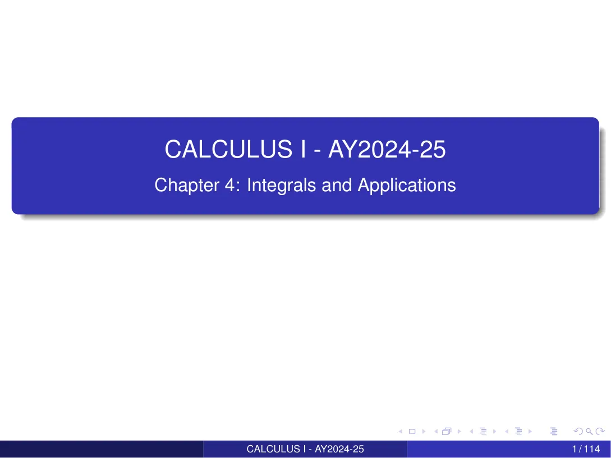
Open Chapter 4. Preview for the student: we will give a precise meaning to "the area under a curve" and then learn to compute it with antiderivatives.
Mở Chương 4. Giới thiệu trước cho bạn: ta sẽ định nghĩa chính xác "diện tích dưới một đường cong" rồi học tính nó bằng nguyên hàm.
Roadmap of Chapter 4 · Lộ trình Chương 4
★ Context · Bổ trợ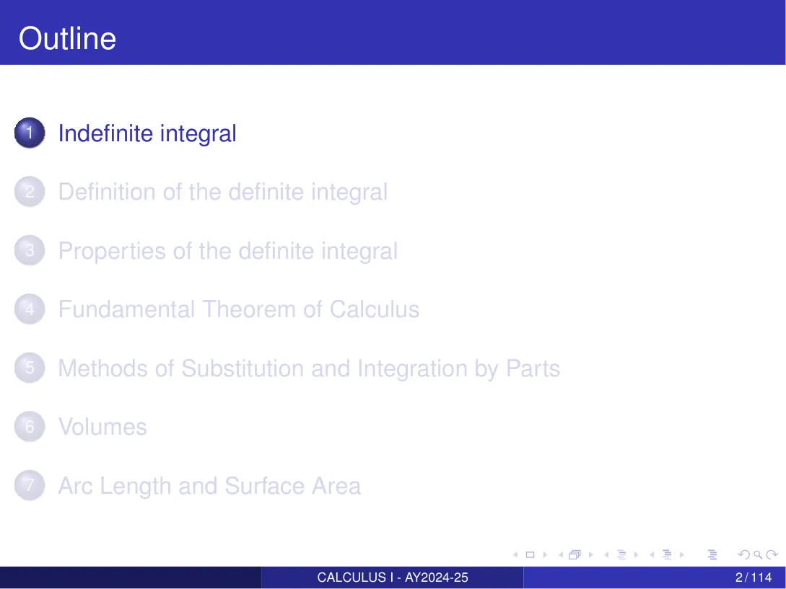
Seven parts: indefinite integral, definition of the definite integral, its properties, the Fundamental Theorem of Calculus, substitution and parts, volumes, arc length and surface area.
Bảy phần: tích phân bất định, định nghĩa tích phân xác định, các tính chất, định lý cơ bản của giải tích, đổi biến và từng phần, thể tích, độ dài cung và diện tích mặt.
Summary: indefinite integrals and two methods · Tóm tắt: tích phân bất định và hai phương pháp
★ Context · Bổ trợ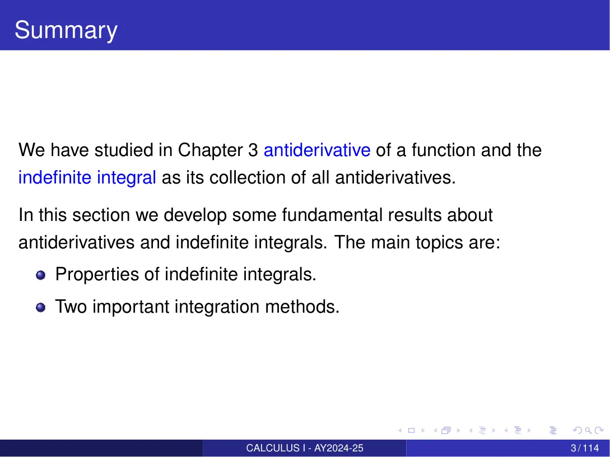
Recall Chapter 3: an antiderivative and the indefinite integral as the collection of all of them. Now: properties of indefinite integrals and two important integration methods.
Nhắc lại Chương 3: nguyên hàm và tích phân bất định là tập hợp tất cả nguyên hàm. Bây giờ: các tính chất của tích phân bất định và hai phương pháp tích phân quan trọng.
Properties of the indefinite integral · Tính chất của tích phân bất định
★★★ Core · Cốt lõi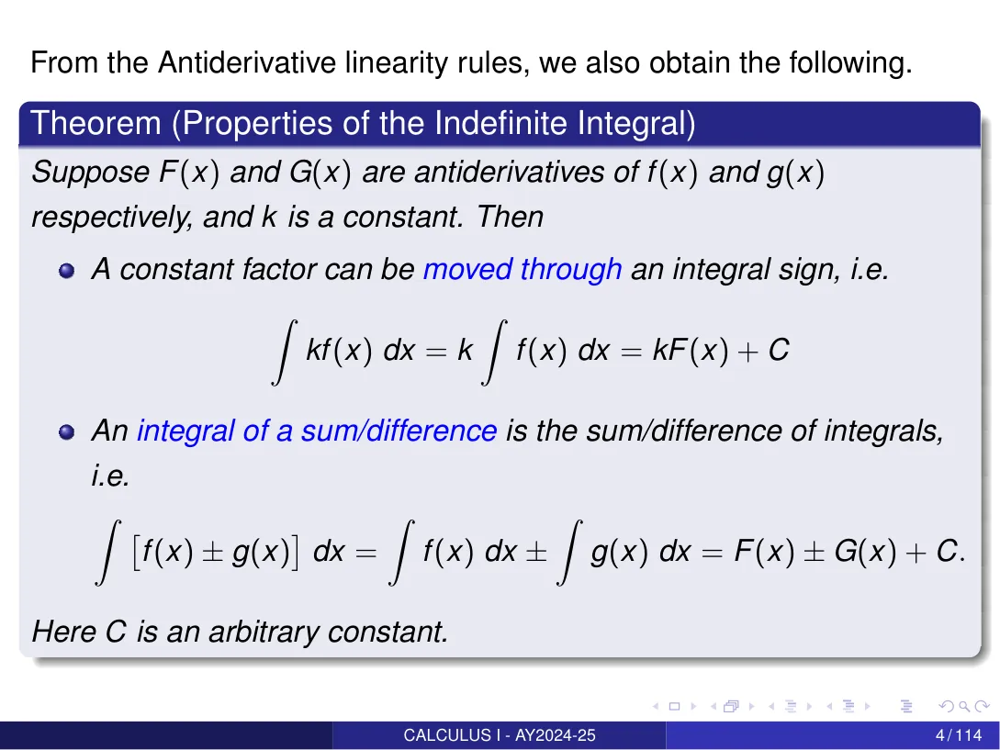
A constant factor moves through the integral sign: $\int kf=k\int f$. An integral of a sum or difference is the sum or difference of the integrals. Remember: no such rule for a product, $\int fg\ne\int f\cdot\int g$.
Hằng số đưa ra ngoài dấu tích phân: $\int kf=k\int f$. Tích phân của tổng hoặc hiệu bằng tổng hoặc hiệu các tích phân. Nhớ: không có quy tắc như vậy cho tích, $\int fg\ne\int f\cdot\int g$.
Find $\displaystyle\int(6x^2-4x)\,dx$.
Tìm $\displaystyle\int(6x^2-4x)\,dx$.
Answer and solution · Đáp án và lời giải
Answer · Đáp án: $2x^3-2x^2+C$
$6\cdot\frac{x^3}3-4\cdot\frac{x^2}2=2x^3-2x^2$.
$6\cdot\frac{x^3}3-4\cdot\frac{x^2}2=2x^3-2x^2$.
Integration by substitution · Tích phân đổi biến
★★★ Core · Cốt lõi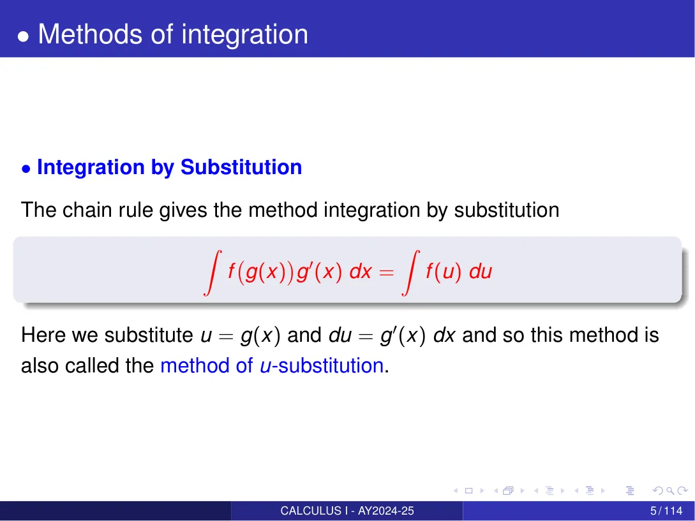
The chain rule read backwards: $\int f(g(x))g'(x)\,dx=\int f(u)\,du$ with $u=g(x)$, $du=g'(x)\,dx$. Recognise an inner function whose derivative is also present (up to a constant). We will practise it fully in Lectures 8–9.
Quy tắc hàm hợp đọc ngược: $\int f(g(x))g'(x)\,dx=\int f(u)\,du$ với $u=g(x)$, $du=g'(x)\,dx$. Nhận ra hàm trong mà đạo hàm của nó cũng có mặt (sai khác một hằng số). Ta sẽ luyện kỹ ở Bài 8–9.
Example: $\int x^3\cos(x^4+2)\,dx$ · Ví dụ: $\int x^3\cos(x^4+2)\,dx$
★★★ Core · Cốt lõi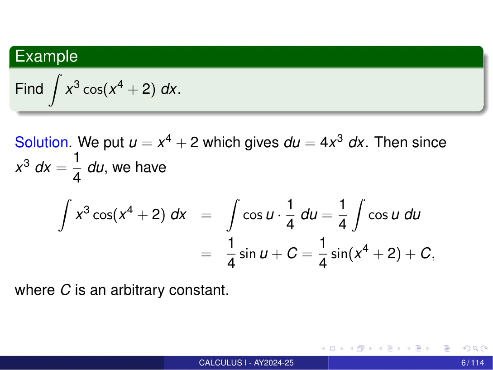
Put $u=x^4+2$, so $du=4x^3\,dx$ and $x^3\,dx=\frac14du$. Then $\int\cos u\cdot\frac14du=\frac14\sin u+C=\frac14\sin(x^4+2)+C$. Always return to $x$ at the end and check by differentiating.
Đặt $u=x^4+2$, nên $du=4x^3\,dx$ và $x^3\,dx=\frac14du$. Khi đó $\int\cos u\cdot\frac14du=\frac14\sin u+C=\frac14\sin(x^4+2)+C$. Luôn quay về $x$ ở cuối và kiểm tra bằng cách lấy đạo hàm.
Find $\displaystyle\int2xe^{x^2}\,dx$ and $\displaystyle\int x\sqrt{x^2+1}\,dx$.
Tìm $\displaystyle\int2xe^{x^2}\,dx$ và $\displaystyle\int x\sqrt{x^2+1}\,dx$.
Answer and solution · Đáp án và lời giải
Answer · Đáp án: $e^{x^2}+C$ and $\frac13(x^2+1)^{3/2}+C$
First: $u=x^2$, $du=2x\,dx$, $\int e^u\,du$. Second: $u=x^2+1$, $x\,dx=\frac12du$, $\frac12\int u^{1/2}du=\frac13u^{3/2}$.
Thứ nhất: $u=x^2$, $du=2x\,dx$, $\int e^u\,du$. Thứ hai: $u=x^2+1$, $x\,dx=\frac12du$, $\frac12\int u^{1/2}du=\frac13u^{3/2}$.
Integration by parts · Tích phân từng phần
★★★ Core · Cốt lõi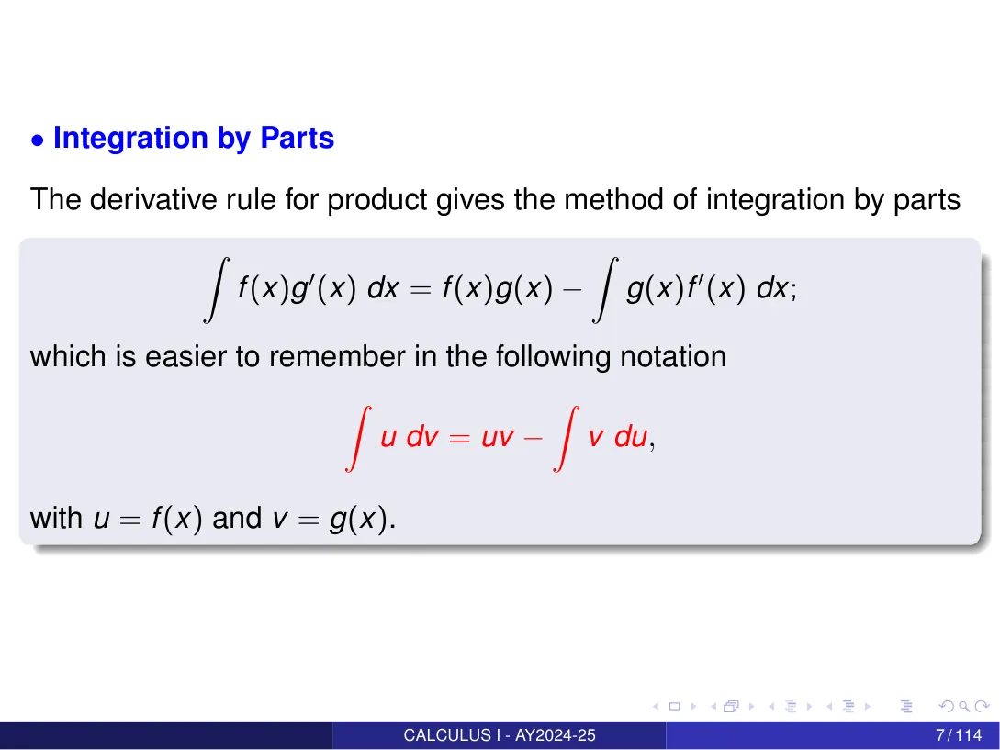
The product rule read backwards: $\int u\,dv=uv-\int v\,du$ (with $u=f(x)$, $v=g(x)$). Choose $u$ to be the part that gets simpler when differentiated and $dv$ the part you can integrate.
Quy tắc tích đọc ngược: $\int u\,dv=uv-\int v\,du$ (với $u=f(x)$, $v=g(x)$). Chọn $u$ là phần đơn giản đi khi lấy đạo hàm và $dv$ là phần bạn lấy nguyên hàm được.
Example: $\int x\sin x\,dx$ · Ví dụ: $\int x\sin x\,dx$
★★★ Core · Cốt lõi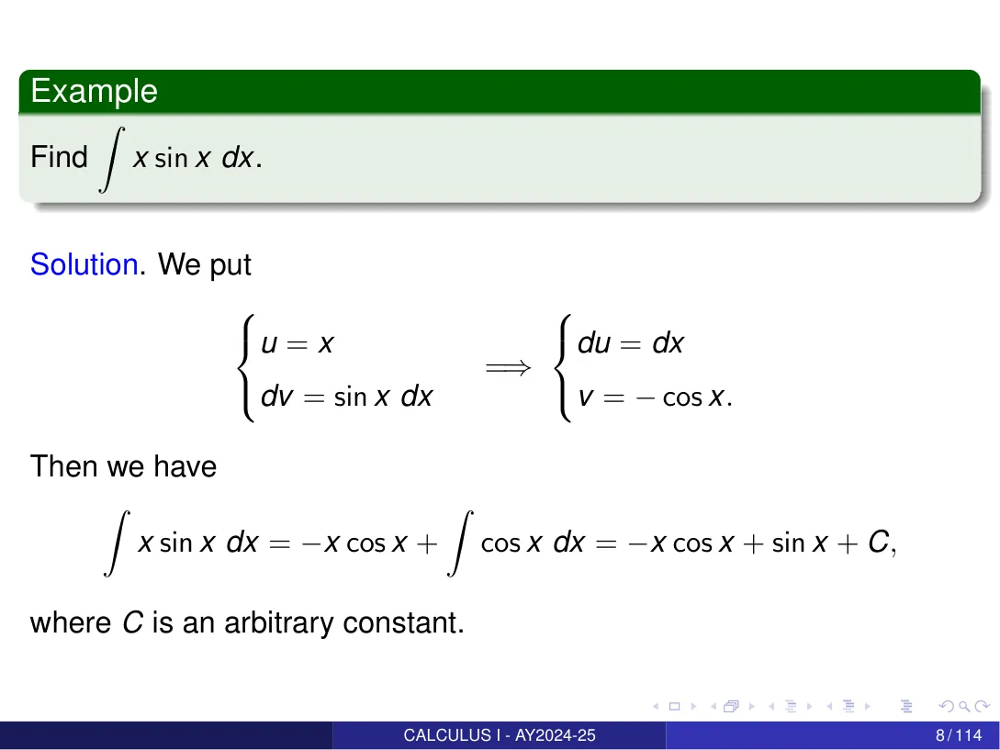
Take $u=x$, $dv=\sin x\,dx$, so $du=dx$ and $v=-\cos x$. Then $\int x\sin x\,dx=-x\cos x+\int\cos x\,dx=-x\cos x+\sin x+C$. Had we chosen $u=\sin x$ the new integral would be worse.
Lấy $u=x$, $dv=\sin x\,dx$, nên $du=dx$ và $v=-\cos x$. Khi đó $\int x\sin x\,dx=-x\cos x+\int\cos x\,dx=-x\cos x+\sin x+C$. Nếu chọn $u=\sin x$ thì tích phân mới sẽ tệ hơn.
Find $\displaystyle\int xe^x\,dx$ and $\displaystyle\int\ln x\,dx$ by parts.
Tìm $\displaystyle\int xe^x\,dx$ và $\displaystyle\int\ln x\,dx$ bằng tích phân từng phần.
Answer and solution · Đáp án và lời giải
Answer · Đáp án: $(x-1)e^x+C$ and $x\ln x-x+C$
First: $u=x$, $dv=e^x\,dx$: $xe^x-\int e^x=xe^x-e^x$. Second: $u=\ln x$, $dv=dx$: $x\ln x-\int x\cdot\frac1x\,dx=x\ln x-x$.
Thứ nhất: $u=x$, $dv=e^x\,dx$: $xe^x-\int e^x=xe^x-e^x$. Thứ hai: $u=\ln x$, $dv=dx$: $x\ln x-\int x\cdot\frac1x\,dx=x\ln x-x$.
Table of integration formulas · Bảng công thức tích phân
★★ Important · Quan trọng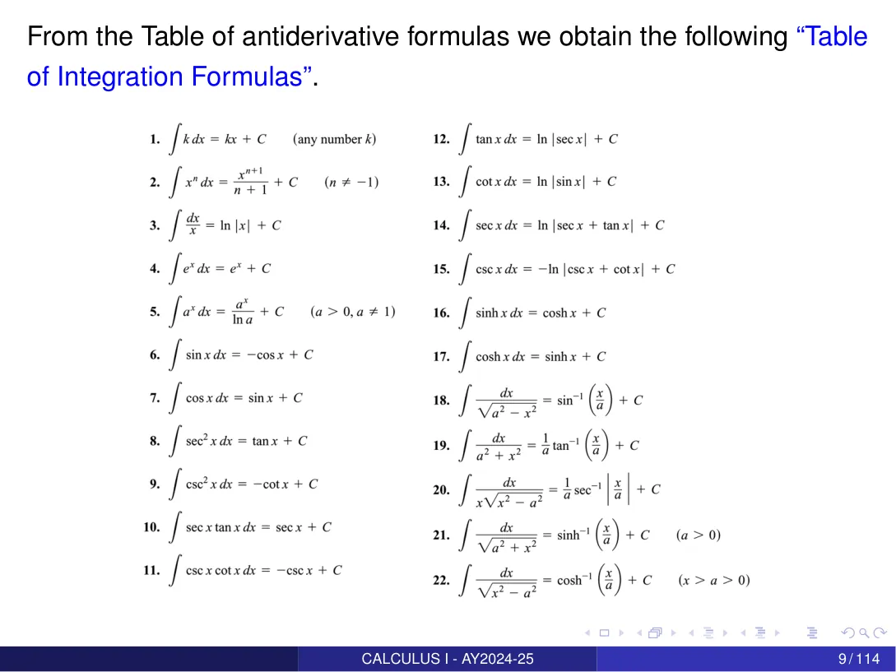
The slide collects the basic antiderivative formulas into a table of integration formulas; this is the memory work of the chapter. The student should be able to write the table without looking.
Slide gom các công thức nguyên hàm cơ bản thành bảng công thức tích phân; đây là phần học thuộc của chương. Bạn cần viết lại được bảng này mà không nhìn.
Roadmap: the definite integral · Lộ trình: tích phân xác định
★ Context · Bổ trợ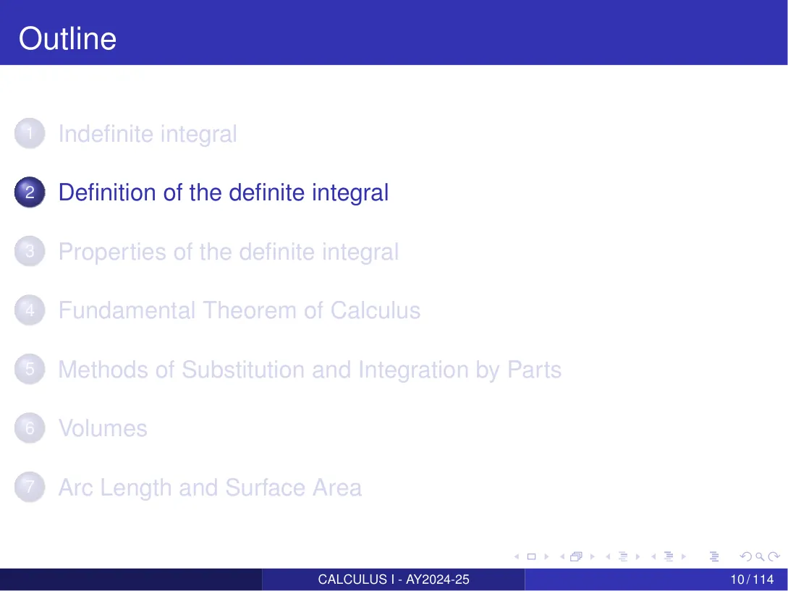
Outline, part 2: the definition of the definite integral.
Lộ trình, phần 2: định nghĩa tích phân xác định.
What this part covers · Phần này gồm những gì
★ Context · Bổ trợ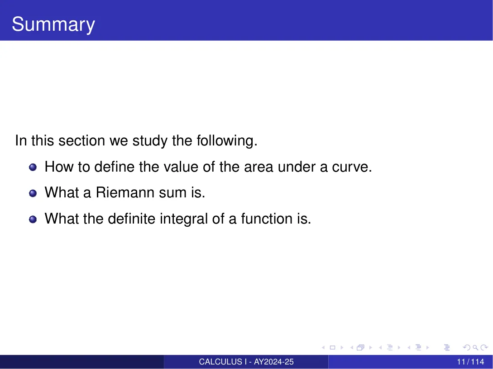
Three questions: how to define the area under a curve, what a Riemann sum is, what the definite integral of a function is.
Ba câu hỏi: định nghĩa diện tích dưới một đường cong thế nào, tổng Riemann là gì, tích phân xác định của một hàm số là gì.
The problem: area under a curve · Bài toán: diện tích dưới một đường cong
★★★ Core · Cốt lõi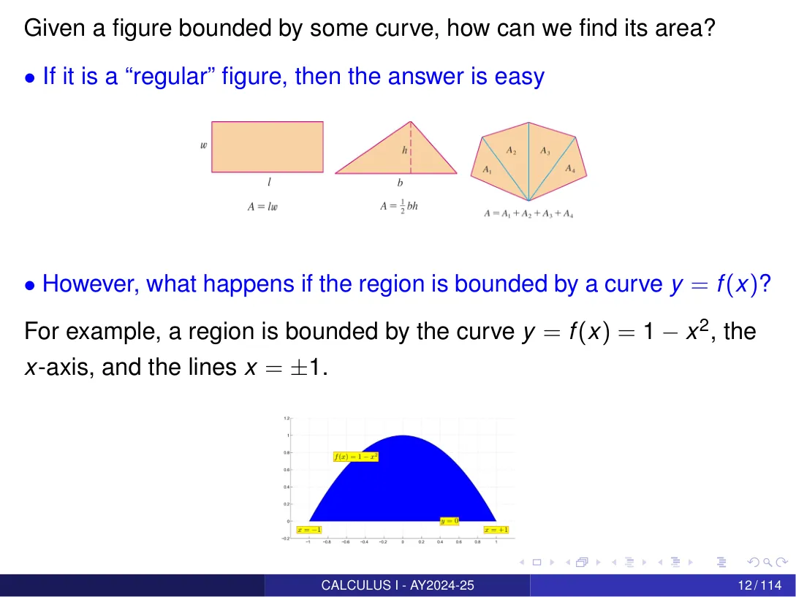
For regular figures (rectangles, triangles, circles) area is easy. But what is the area of the region under $y=1-x^2$ between $x=-1$ and $x=1$? The boundary is curved. (Answer to come: $\frac43$.)
Với hình đều (chữ nhật, tam giác, hình tròn) tính diện tích dễ. Nhưng diện tích miền dưới $y=1-x^2$ giữa $x=-1$ và $x=1$ là bao nhiêu? Biên là đường cong. (Đáp số sẽ có: $\frac43$.)
Check the value $\frac43$ for the area under $y=1-x^2$ from $-1$ to $1$ (the integral is computed later in this lecture).
Kiểm tra giá trị $\frac43$ cho diện tích dưới $y=1-x^2$ từ $-1$ đến $1$ (tích phân được tính ở phần sau của bài).
Answer and solution · Đáp án và lời giải
Answer · Đáp án: $\dfrac43$
With the FTC: $\left[x-\frac{x^3}3\right]_{-1}^{1}=\left(1-\frac13\right)-\left(-1+\frac13\right)=\frac43$.
Dùng FTC: $\left[x-\frac{x^3}3\right]_{-1}^{1}=\left(1-\frac13\right)-\left(-1+\frac13\right)=\frac43$.
The idea: approximate by rectangles, then take a limit · Ý tưởng: xấp xỉ bằng hình chữ nhật rồi lấy giới hạn
★★★ Core · Cốt lõi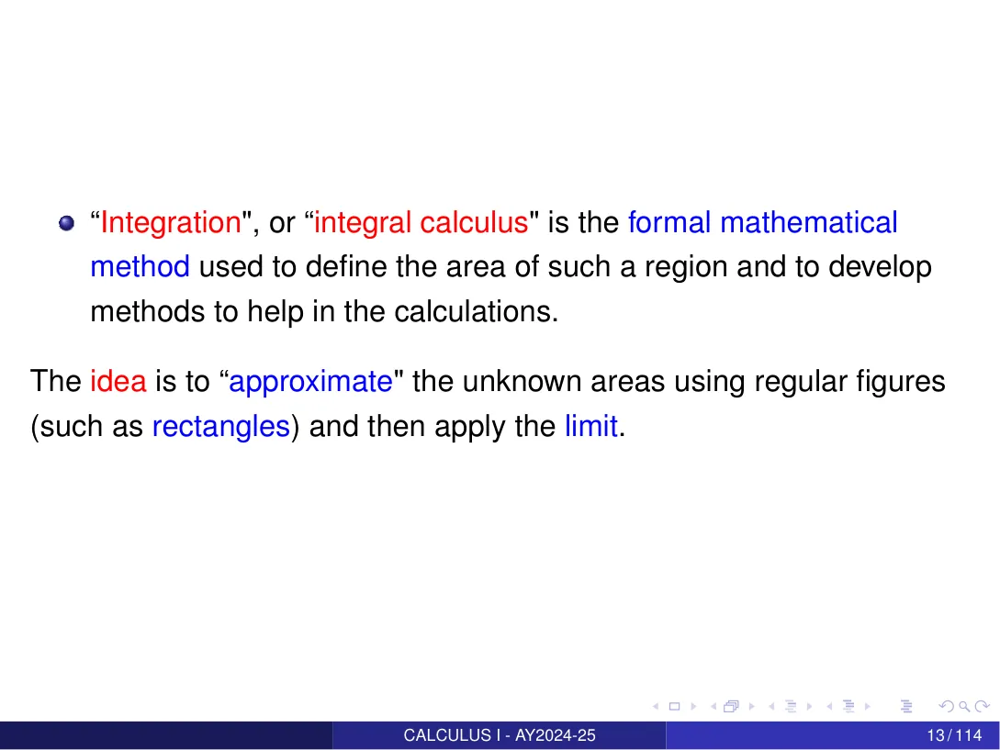
Integration is the formal method to define such an area: approximate by regular figures (rectangles) and take a limit. This is the same pattern as the tangent (secants then a limit).
Tích phân là phương pháp chính thức để định nghĩa diện tích như vậy: xấp xỉ bằng các hình đều (hình chữ nhật) rồi lấy giới hạn. Đây là mô hình giống tiếp tuyến (cát tuyến rồi giới hạn).
Dividing the interval into strips · Chia đoạn thành các dải
★★★ Core · Cốt lõi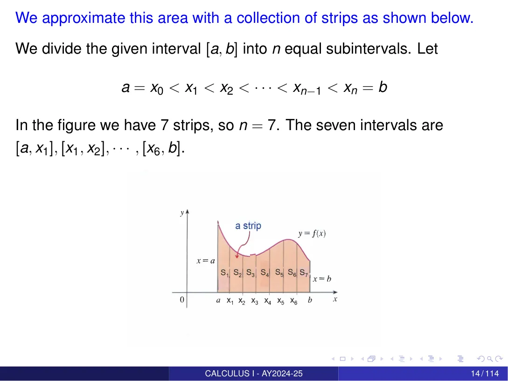
Divide $[a,b]$ into $n$ equal subintervals $a=x_0<x_1<\dots<x_n=b$; the figure has $n=7$ strips. Each strip is a thin slice of the region over one subinterval, of width $\frac{b-a}n$.
Chia $[a,b]$ thành $n$ đoạn con bằng nhau $a=x_0<x_1<\dots<x_n=b$; hình vẽ có $n=7$ dải. Mỗi dải là một lát mỏng của miền trên một đoạn con, bề rộng $\frac{b-a}n$.
One rectangle: width and sampling point · Một hình chữ nhật: bề rộng và điểm lấy mẫu
★★★ Core · Cốt lõi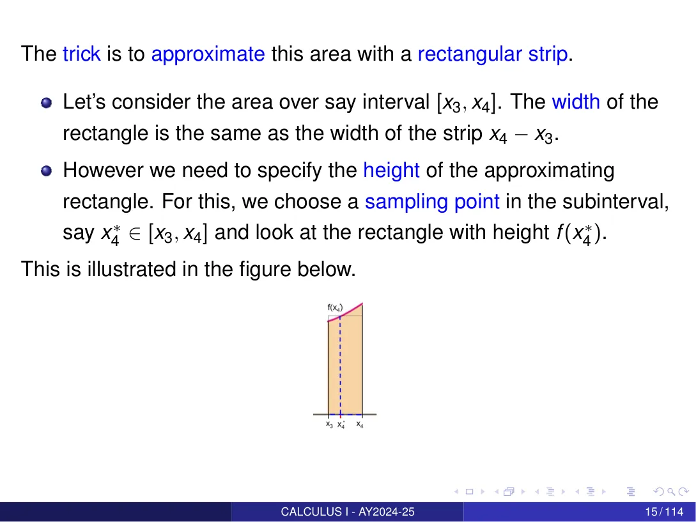
On $[x_3,x_4]$ the rectangle has the same width as the strip; its height is $f(x_4^*)$ for a sampling point $x_4^*$ chosen in that subinterval. So the rectangle's area is $f(x_i^*)\cdot\frac{b-a}n$.
Trên $[x_3,x_4]$ hình chữ nhật có cùng bề rộng với dải; chiều cao là $f(x_4^*)$ với điểm lấy mẫu $x_4^*$ chọn trong đoạn con đó. Vậy diện tích hình chữ nhật là $f(x_i^*)\cdot\frac{b-a}n$.
The Riemann sum and the choices of sampling point · Tổng Riemann và các cách chọn điểm lấy mẫu
★★★ Core · Cốt lõi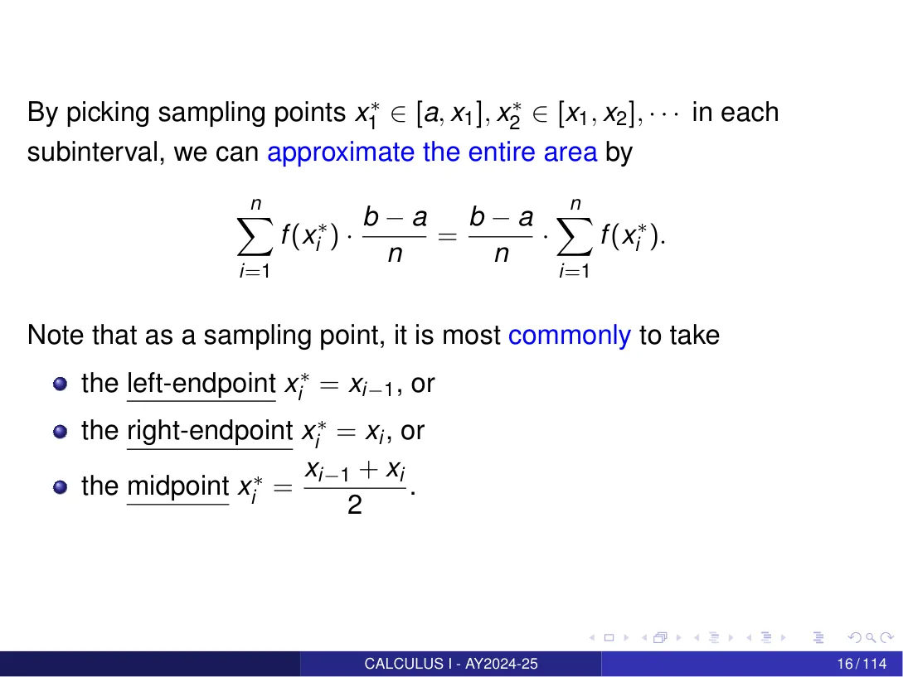
Adding all rectangles: area $\approx\sum_{i=1}^nf(x_i^*)\cdot\frac{b-a}n=\frac{b-a}n\sum f(x_i^*)$. Usual choices: left endpoint $x_i^*=x_{i-1}$, right endpoint $x_i^*=x_i$, midpoint $\frac{x_{i-1}+x_i}2$.
Cộng mọi hình chữ nhật: diện tích $\approx\sum_{i=1}^nf(x_i^*)\cdot\frac{b-a}n=\frac{b-a}n\sum f(x_i^*)$. Các cách chọn thường dùng: đầu mút trái $x_i^*=x_{i-1}$, đầu mút phải $x_i^*=x_i$, trung điểm $\frac{x_{i-1}+x_i}2$.
For $f(x)=x^2$ on $[0,1]$ with $n=4$ compute the left, right and midpoint Riemann sums.
Với $f(x)=x^2$ trên $[0,1]$ và $n=4$, tính tổng Riemann dùng đầu trái, đầu phải và trung điểm.
Answer and solution · Đáp án và lời giải
Answer · Đáp án: left $\frac7{32}=0.21875$; right $\frac{15}{32}=0.46875$; midpoint $\frac{21}{64}=0.328125$
Width $\frac14$. Right: $\frac14\left(\frac1{16}+\frac4{16}+\frac9{16}+1\right)=\frac{15}{32}$. Left: $\frac14\left(0+\frac1{16}+\frac4{16}+\frac9{16}\right)=\frac7{32}$. Midpoints $\frac18,\frac38,\frac58,\frac78$: $\frac14\cdot\frac{1+9+25+49}{64}=\frac{21}{64}$. The exact area $\frac13$ lies between left and right (the function is increasing).
Bề rộng $\frac14$. Đầu phải: $\frac14\left(\frac1{16}+\frac4{16}+\frac9{16}+1\right)=\frac{15}{32}$. Đầu trái: $\frac14\left(0+\frac1{16}+\frac4{16}+\frac9{16}\right)=\frac7{32}$. Trung điểm $\frac18,\frac38,\frac58,\frac78$: $\frac14\cdot\frac{1+9+25+49}{64}=\frac{21}{64}$. Diện tích đúng $\frac13$ nằm giữa tổng trái và phải (hàm tăng).
More rectangles, better approximation · Nhiều hình chữ nhật hơn, xấp xỉ tốt hơn
★★★ Core · Cốt lõi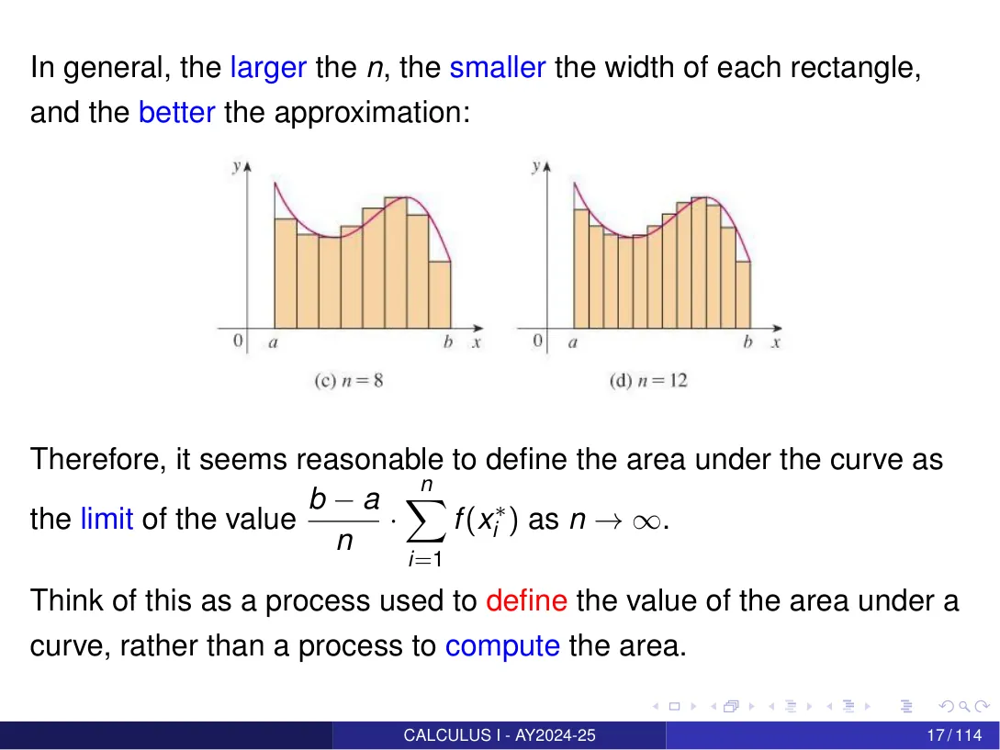
The larger $n$, the thinner the rectangles and the better the approximation. So we define the area as the limit of the Riemann sums as $n\to\infty$. Stress: this is a definition, not a way to compute (the FTC will do that).
$n$ càng lớn thì các hình chữ nhật càng mỏng và xấp xỉ càng tốt. Vì vậy ta định nghĩa diện tích là giới hạn của các tổng Riemann khi $n\to\infty$. Nhấn mạnh: đây là một định nghĩa, không phải cách tính (FTC sẽ làm việc đó).
Definition: Riemann sum and Riemann integral · Định nghĩa: tổng Riemann và tích phân Riemann
★★★ Core · Cốt lõi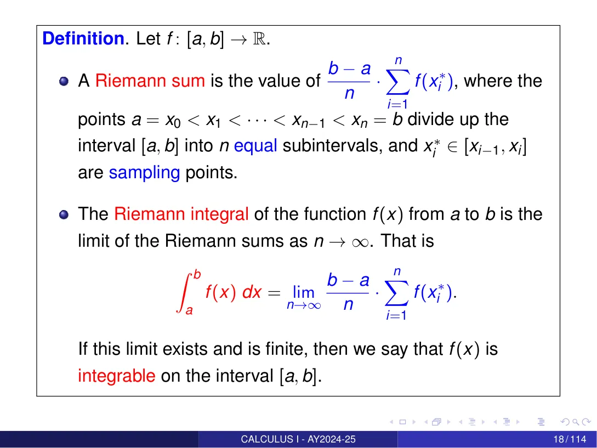
A Riemann sum is $\frac{b-a}n\sum_{i=1}^nf(x_i^*)$. The Riemann integral is its limit: $\int_a^bf(x)\,dx=\lim_{n\to\infty}\frac{b-a}n\sum_{i=1}^nf(x_i^*)$. If the limit exists and is finite, $f$ is integrable on $[a,b]$.
Tổng Riemann là $\frac{b-a}n\sum_{i=1}^nf(x_i^*)$. Tích phân Riemann là giới hạn của nó: $\int_a^bf(x)\,dx=\lim_{n\to\infty}\frac{b-a}n\sum_{i=1}^nf(x_i^*)$. Nếu giới hạn tồn tại và hữu hạn thì $f$ khả tích trên $[a,b]$.
This is the definition behind every integral; exam questions ask "evaluate this limit of a sum" by recognising a Riemann sum.
Đây là định nghĩa nằm sau mọi tích phân; đề thi hỏi "tính giới hạn của một tổng" bằng cách nhận ra một tổng Riemann.
Write the right-endpoint Riemann sum for $\int_1^3x\,dx$ and take the limit.
Viết tổng Riemann đầu mút phải cho $\int_1^3x\,dx$ và lấy giới hạn.
Answer and solution · Đáp án và lời giải
Answer · Đáp án: $4$
$\Delta x=\frac2n$, $x_i=1+\frac{2i}n$. $\frac2n\sum_{i=1}^n\left(1+\frac{2i}n\right)=\frac2n\left(n+(n+1)\right)=\frac{2(2n+1)}n\to4$ (the area of a trapezoid: $\frac{(1+3)}2\cdot2=4$).
$\Delta x=\frac2n$, $x_i=1+\frac{2i}n$. $\frac2n\sum_{i=1}^n\left(1+\frac{2i}n\right)=\frac2n\left(n+(n+1)\right)=\frac{2(2n+1)}n\to4$ (diện tích hình thang: $\frac{(1+3)}2\cdot2=4$).
Remarks: the value, and the conventions $a=b$, $a>b$ · Nhận xét: giá trị, và quy ước $a=b$, $a>b$
★★★ Core · Cốt lõi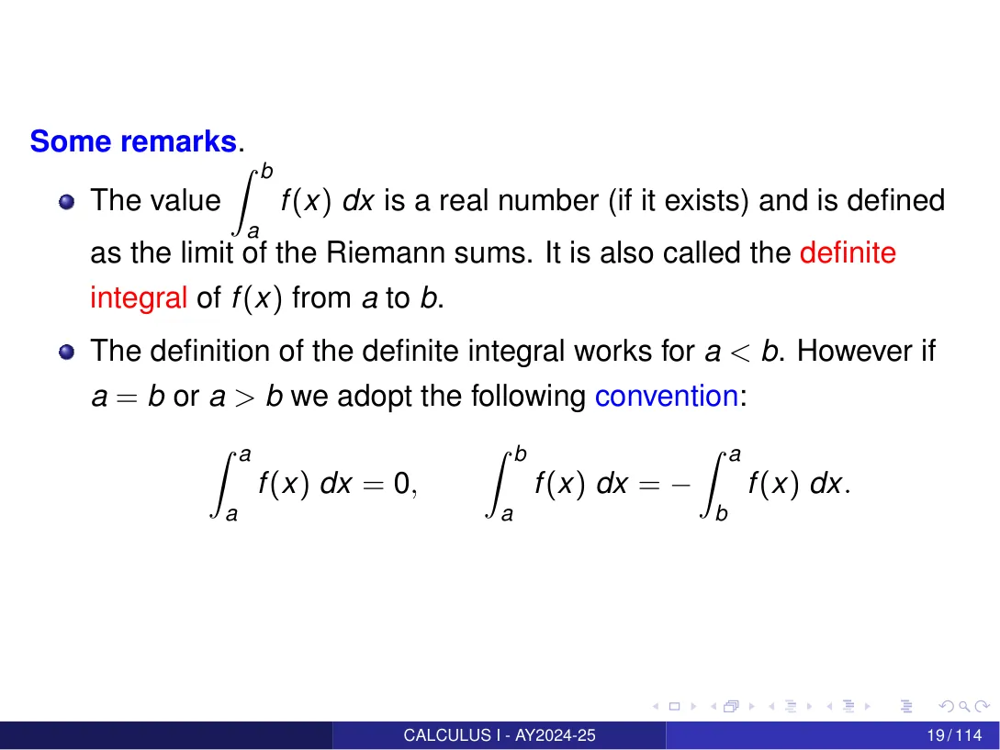
$\int_a^bf$ is a number (not a function), defined for $a<b$. Conventions: $\int_a^af=0$ and $\int_b^af=-\int_a^bf$ (reversing the limits changes the sign).
$\int_a^bf$ là một số (không phải hàm), được định nghĩa với $a<b$. Quy ước: $\int_a^af=0$ và $\int_b^af=-\int_a^bf$ (đổi cận thì đổi dấu).
Remarks: dummy variable, area, boundedness · Nhận xét: biến câm, diện tích, tính bị chặn
★★ Important · Quan trọng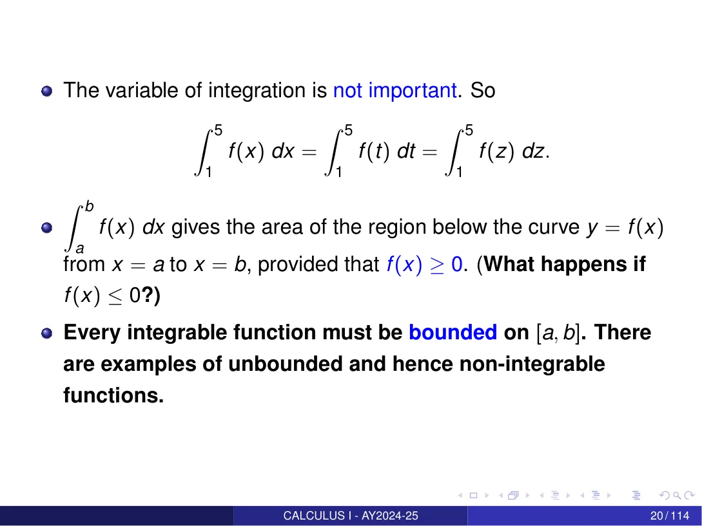
The variable of integration does not matter: $\int_1^5f(x)dx=\int_1^5f(t)dt$. $\int_a^bf$ is the area if $f\ge0$; the slide asks: what if $f\le0$? (Answer on slide 29.) An integrable function must be bounded.
Biến lấy tích phân không quan trọng: $\int_1^5f(x)dx=\int_1^5f(t)dt$. $\int_a^bf$ là diện tích nếu $f\ge0$; slide hỏi: nếu $f\le0$ thì sao? (Đáp ở slide 29.) Hàm khả tích phải bị chặn.
Compute $\int_0^1(-x)\,dx$. What does the sign tell you about the picture?
Tính $\int_0^1(-x)\,dx$. Dấu của kết quả nói gì về hình vẽ?
Answer and solution · Đáp án và lời giải
Answer · Đáp án: $-\frac12$: the region is below the axis, area $\frac12$
$-\int_0^1x\,dx=-\frac12$. The graph lies below the $x$-axis, so the integral is minus the area $\frac12$.
$-\int_0^1x\,dx=-\frac12$. Đồ thị nằm dưới trục hoành nên tích phân là trừ diện tích $\frac12$.
Example: $\int_0^1x^2\,dx$ from the definition, setup · Ví dụ: $\int_0^1x^2\,dx$ từ định nghĩa, thiết lập
★★★ Core · Cốt lõi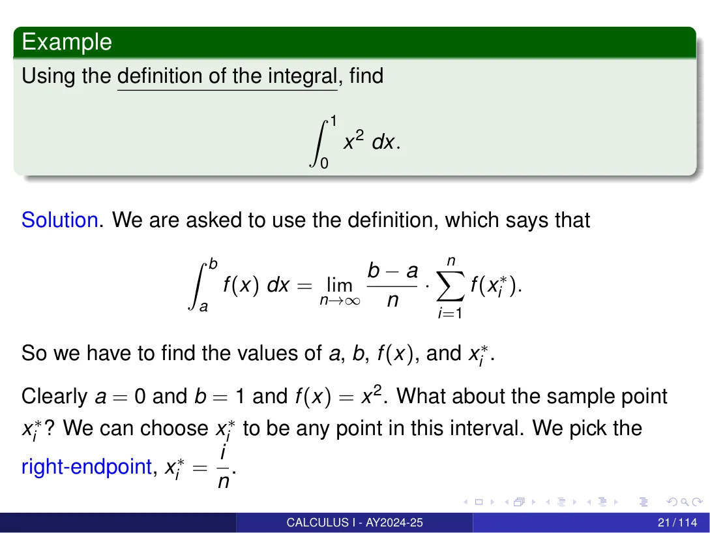
We are told to use the definition, so identify the pieces: $a=0$, $b=1$, $f(x)=x^2$, and choose the sampling point; any point works, take the right endpoint $x_i^*=\frac in$.
Đề yêu cầu dùng định nghĩa, nên xác định các thành phần: $a=0$, $b=1$, $f(x)=x^2$, và chọn điểm lấy mẫu; điểm nào cũng được, lấy đầu mút phải $x_i^*=\frac in$.
Example: the computation and the sum of squares formula · Ví dụ: tính toán và công thức tổng bình phương
★★★ Core · Cốt lõi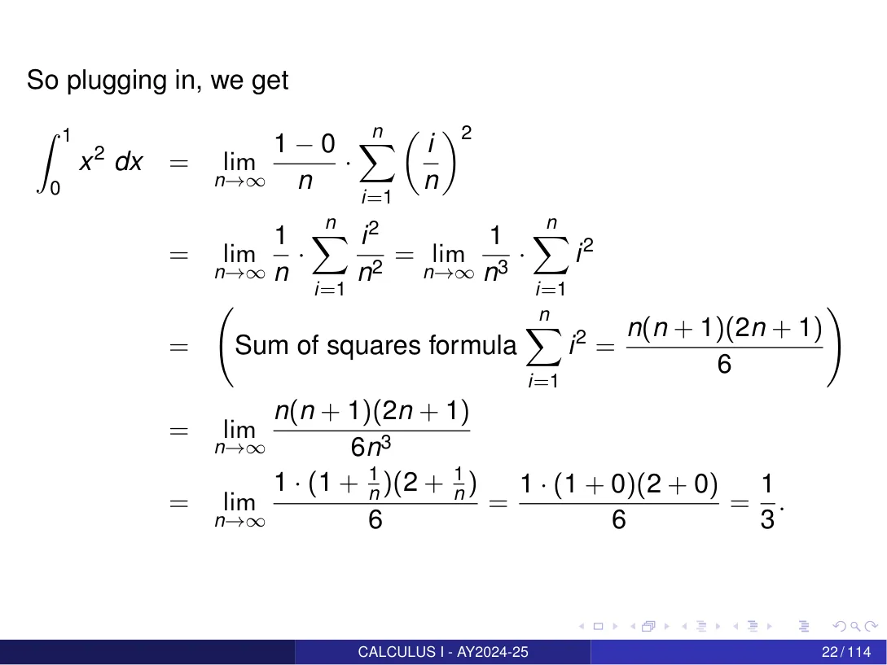
$\int_0^1x^2dx=\lim\frac1n\sum_{i=1}^n\frac{i^2}{n^2}=\lim\frac1{n^3}\sum i^2$. Use $\sum_{i=1}^ni^2=\frac{n(n+1)(2n+1)}6$: we get $\lim\frac{n(n+1)(2n+1)}{6n^3}=\lim\frac{(1+\frac1n)(2+\frac1n)}6=\frac13$. Note the answer $\frac13$ is also the value $F(1)-F(0)$ for $F=\frac{x^3}3$; the FTC will explain why.
$\int_0^1x^2dx=\lim\frac1n\sum_{i=1}^n\frac{i^2}{n^2}=\lim\frac1{n^3}\sum i^2$. Dùng $\sum_{i=1}^ni^2=\frac{n(n+1)(2n+1)}6$: ta được $\lim\frac{n(n+1)(2n+1)}{6n^3}=\lim\frac{(1+\frac1n)(2+\frac1n)}6=\frac13$. Lưu ý đáp số $\frac13$ cũng là $F(1)-F(0)$ với $F=\frac{x^3}3$; FTC sẽ giải thích vì sao.
Use the definition (right endpoints) to compute $\int_0^1x^3\,dx$, with $\sum i^3=\left(\frac{n(n+1)}2\right)^2$.
Dùng định nghĩa (đầu mút phải) tính $\int_0^1x^3\,dx$, với $\sum i^3=\left(\frac{n(n+1)}2\right)^2$.
Answer and solution · Đáp án và lời giải
Answer · Đáp án: $\dfrac14$
$\frac1n\sum\frac{i^3}{n^3}=\frac1{n^4}\cdot\frac{n^2(n+1)^2}4=\frac{(1+1/n)^2}4\to\frac14$.
$\frac1n\sum\frac{i^3}{n^3}=\frac1{n^4}\cdot\frac{n^2(n+1)^2}4=\frac{(1+1/n)^2}4\to\frac14$.
Using the definition backwards: the problem · Dùng định nghĩa theo chiều ngược: bài toán
★★★ Core · Cốt lõi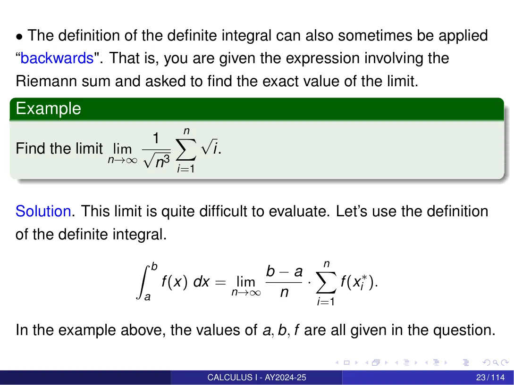
Sometimes you are given a limit of a sum and must find its value: $\lim_{n\to\infty}\frac1{\sqrt{n^3}}\sum_{i=1}^n\sqrt i$. Direct evaluation is hard; recognise it as a Riemann sum and convert it to an integral.
Đôi khi bạn được cho giới hạn của một tổng và phải tìm giá trị: $\lim_{n\to\infty}\frac1{\sqrt{n^3}}\sum_{i=1}^n\sqrt i$. Tính trực tiếp khó; hãy nhận ra nó là tổng Riemann và chuyển thành tích phân.
Backwards: finding $a$, $b$ and the sampling point · Theo chiều ngược: tìm $a$, $b$ và điểm lấy mẫu
★★★ Core · Cốt lõi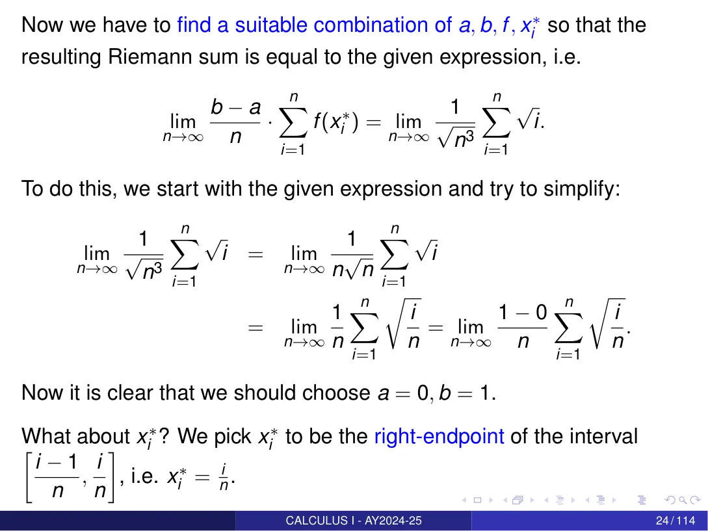
Rewrite: $\frac1{n\sqrt n}\sum\sqrt i=\frac1n\sum\sqrt{\frac in}$, which is $\frac{1-0}n\sum f\left(\frac in\right)$: so $a=0$, $b=1$, and the sampling point is the right endpoint $x_i^*=\frac in$. The tell-tale sign: the sum has the form $\frac1n\sum g\left(\frac in\right)$.
Viết lại: $\frac1{n\sqrt n}\sum\sqrt i=\frac1n\sum\sqrt{\frac in}$, đó là $\frac{1-0}n\sum f\left(\frac in\right)$: vậy $a=0$, $b=1$, và điểm lấy mẫu là đầu mút phải $x_i^*=\frac in$. Dấu hiệu nhận biết: tổng có dạng $\frac1n\sum g\left(\frac in\right)$.
Backwards: the function and the conclusion · Theo chiều ngược: hàm số và kết luận
★★★ Core · Cốt lõi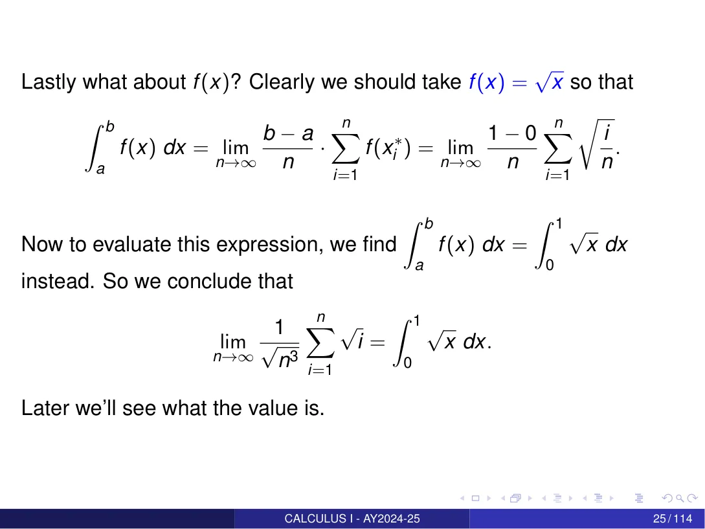
Clearly $f(x)=\sqrt x$, so $\lim\frac1{\sqrt{n^3}}\sum\sqrt i=\int_0^1\sqrt x\,dx$. The slide leaves the value for later: with the FTC, $\int_0^1x^{1/2}dx=\frac23$.
Rõ ràng $f(x)=\sqrt x$, nên $\lim\frac1{\sqrt{n^3}}\sum\sqrt i=\int_0^1\sqrt x\,dx$. Slide để dành giá trị cho sau: với FTC, $\int_0^1x^{1/2}dx=\frac23$.
Evaluate $\displaystyle\lim_{n\to\infty}\sum_{i=1}^n\frac{n}{n^2+i^2}$ by recognising a Riemann sum.
Tính $\displaystyle\lim_{n\to\infty}\sum_{i=1}^n\frac{n}{n^2+i^2}$ bằng cách nhận ra một tổng Riemann.
Answer and solution · Đáp án và lời giải
Answer · Đáp án: $\dfrac\pi4$
$\frac n{n^2+i^2}=\frac1n\cdot\frac1{1+(i/n)^2}$, a Riemann sum for $\int_0^1\frac{dx}{1+x^2}=\arctan1=\frac\pi4$.
$\frac n{n^2+i^2}=\frac1n\cdot\frac1{1+(i/n)^2}$, một tổng Riemann của $\int_0^1\frac{dx}{1+x^2}=\arctan1=\frac\pi4$.
Show that $\displaystyle\lim_{n\to\infty}\frac1{\sqrt{n^3}}\sum_{i=1}^n\sqrt i=\frac23$ numerically for $n=10\,000$.
Kiểm tra bằng số rằng $\displaystyle\lim_{n\to\infty}\frac1{\sqrt{n^3}}\sum_{i=1}^n\sqrt i=\frac23$ với $n=10\,000$.
Answer and solution · Đáp án và lời giải
Answer · Đáp án: $\approx0.6667$
The sum for $n=10^4$ is $0.66676\ldots$, already within $10^{-3}$ of $\frac23=\int_0^1\sqrt x\,dx$.
Tổng với $n=10^4$ là $0.66676\ldots$, đã sai khác dưới $10^{-3}$ so với $\frac23=\int_0^1\sqrt x\,dx$.
Roadmap: properties of the definite integral · Lộ trình: tính chất của tích phân xác định
★ Context · Bổ trợ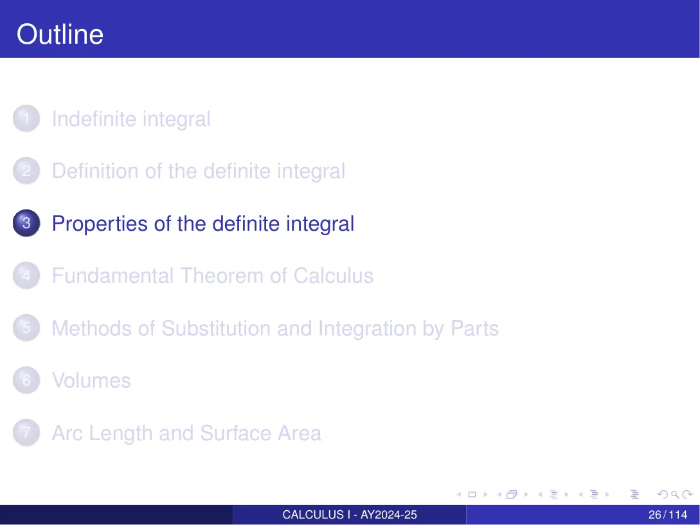
Outline, part 3: properties.
Lộ trình, phần 3: các tính chất.
What this part covers · Phần này gồm những gì
★ Context · Bổ trợ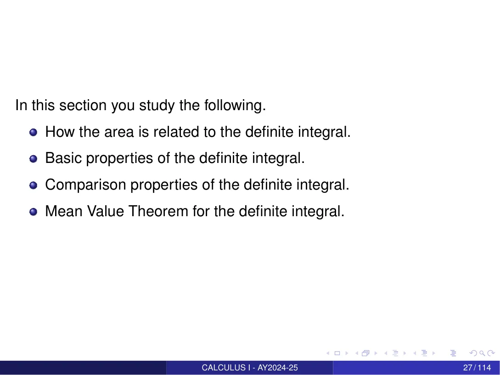
Four things: the relation of area and the definite integral, basic properties, comparison properties and the Mean Value Theorem for integrals.
Bốn điều: quan hệ giữa diện tích và tích phân xác định, các tính chất cơ bản, tính chất so sánh và định lý giá trị trung bình cho tích phân.
Area and the integral when $f$ may be negative · Diện tích và tích phân khi $f$ có thể âm
★★★ Core · Cốt lõi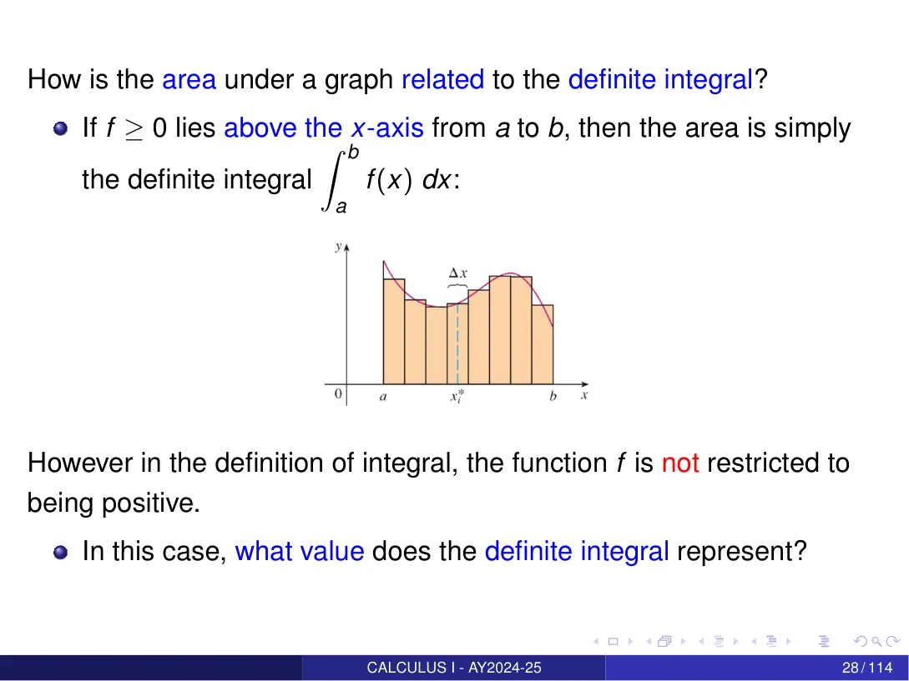
If $f\ge0$ the integral is the area under the graph. But the definition does not need $f\ge0$: what does the integral mean when $f$ takes negative values?
Nếu $f\ge0$ thì tích phân chính là diện tích dưới đồ thị. Nhưng định nghĩa không đòi $f\ge0$: tích phân có nghĩa gì khi $f$ nhận giá trị âm?
Signed area: below the axis counts negatively · Diện tích có dấu: phần dưới trục tính âm
★★★ Core · Cốt lõi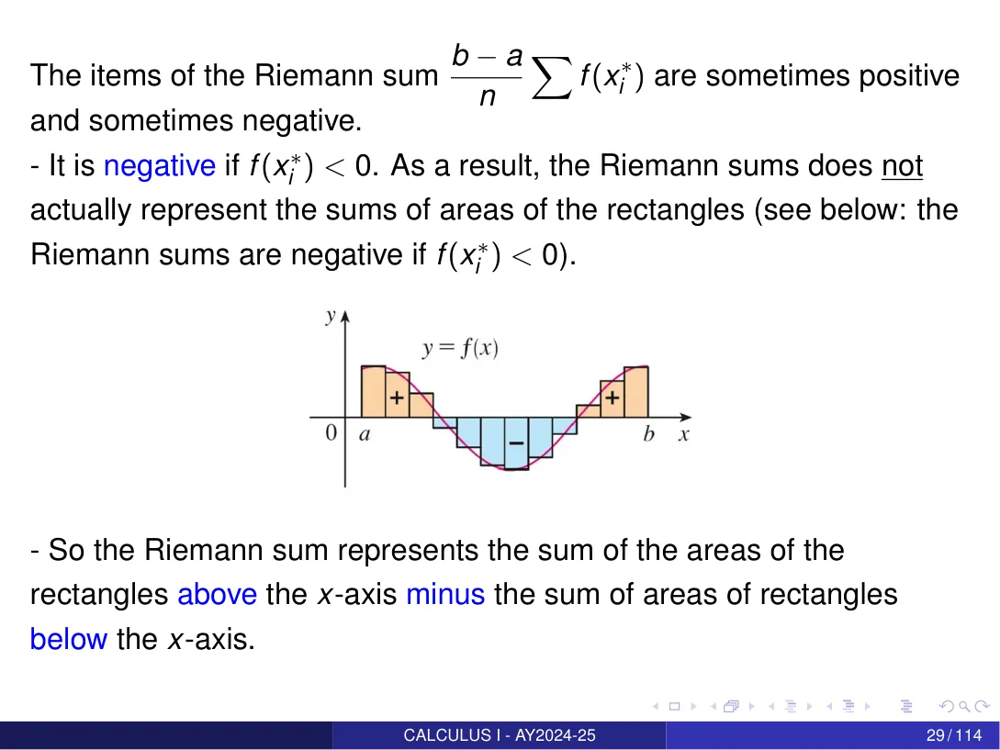
Terms $f(x_i^*)\frac{b-a}n$ are negative where $f<0$. So the Riemann sum is (area of rectangles above the axis) minus (area of rectangles below): the integral is a signed area.
Các số hạng $f(x_i^*)\frac{b-a}n$ âm nơi $f<0$. Vậy tổng Riemann là (diện tích các hình chữ nhật phía trên trục) trừ (diện tích phía dưới): tích phân là diện tích có dấu.
Compute $\int_0^{2\pi}\sin x\,dx$ and the area between the sine curve and the $x$-axis on $[0,2\pi]$.
Tính $\int_0^{2\pi}\sin x\,dx$ và diện tích giữa đường sin và trục hoành trên $[0,2\pi]$.
Answer and solution · Đáp án và lời giải
Answer · Đáp án: integral $0$; area $4$
The two humps cancel in the integral: $2+(-2)=0$. For the area use absolute values: $2+2=4$.
Hai bướng triệt tiêu nhau trong tích phân: $2+(-2)=0$. Với diện tích dùng giá trị tuyệt đối: $2+2=4$.
Area bounded by a curve and the axis: split at the roots · Diện tích giới hạn bởi đường cong và trục: tách tại các nghiệm
★★★ Core · Cốt lõi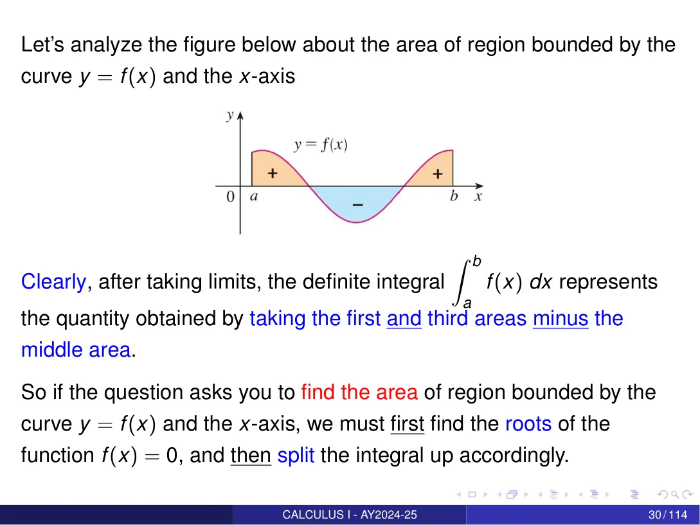
The integral equals (first area) minus (middle area) plus (third area). So to find the area bounded by $y=f(x)$ and the $x$-axis: find the roots of $f$, split the integral there, and take absolute values piece by piece.
Tích phân bằng (diện tích thứ nhất) trừ (diện tích giữa) cộng (diện tích thứ ba). Vì vậy để tìm diện tích giới hạn bởi $y=f(x)$ và trục hoành: tìm nghiệm của $f$, tách tích phân tại đó, và lấy giá trị tuyệt đối từng đoạn.
The most common integral mistake in applications is to integrate straight through a sign change; tests ask "find the area" precisely to catch it.
Lỗi phổ biến nhất khi ứng dụng tích phân là tích phân thẳng qua điểm đổi dấu; đề thi hỏi "tìm diện tích" chính là để bắt lỗi này.
Example: area of $y=x^3-6x$ on $[0,3]$, the roots · Ví dụ: diện tích của $y=x^3-6x$ trên $[0,3]$, các nghiệm
★★★ Core · Cốt lõi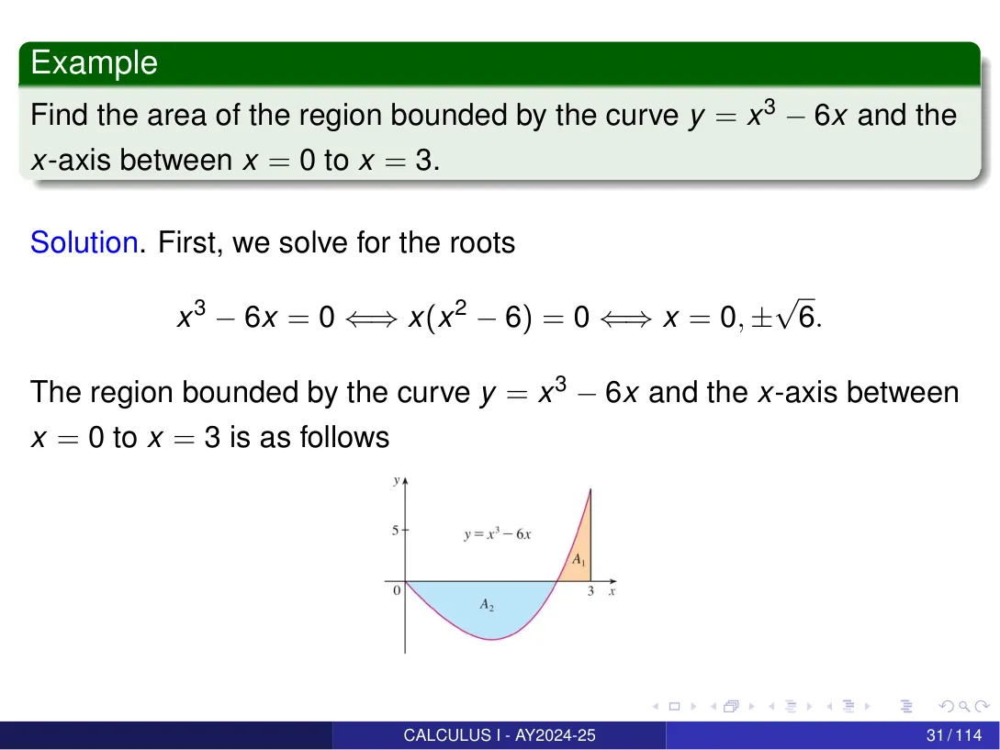
Roots: $x^3-6x=x(x^2-6)=0$ gives $x=0,\pm\sqrt6$. On $[0,3]$ the curve is below the axis for $0<x<\sqrt6\approx2.45$ and above for $\sqrt6<x<3$. Draw the region before integrating.
Nghiệm: $x^3-6x=x(x^2-6)=0$ cho $x=0,\pm\sqrt6$. Trên $[0,3]$ đường cong dưới trục khi $0<x<\sqrt6\approx2.45$ và trên trục khi $\sqrt6<x<3$. Vẽ miền trước khi tích phân.
Example: the naive integral is negative; the correct area · Ví dụ: tích phân thẳng cho số âm; diện tích đúng
★★★ Core · Cốt lõi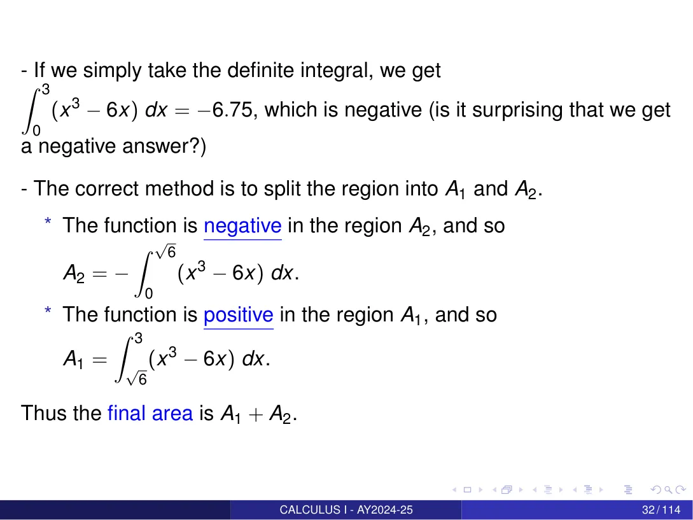
The naive $\int_0^3(x^3-6x)dx=-6.75$ is negative: not an area. Correct: $A_2=-\int_0^{\sqrt6}(x^3-6x)dx=9$ (below the axis) and $A_1=\int_{\sqrt6}^3(x^3-6x)dx=2.25$ (above). Total area $=A_1+A_2=11.25=\frac{45}4$.
Tích phân thẳng $\int_0^3(x^3-6x)dx=-6.75$ âm: không phải diện tích. Đúng: $A_2=-\int_0^{\sqrt6}(x^3-6x)dx=9$ (dưới trục) và $A_1=\int_{\sqrt6}^3(x^3-6x)dx=2.25$ (trên trục). Tổng diện tích $=A_1+A_2=11.25=\frac{45}4$.
Verify: compute $\int_0^3(x^3-6x)dx$ and the area bounded by $y=x^3-6x$ and the $x$-axis on $[0,3]$.
Kiểm tra: tính $\int_0^3(x^3-6x)dx$ và diện tích giới hạn bởi $y=x^3-6x$ và trục hoành trên $[0,3]$.
Answer and solution · Đáp án và lời giải
Answer · Đáp án: integral $-\frac{27}4=-6.75$; area $\frac{45}4=11.25$
$F(x)=\frac{x^4}4-3x^2$: $F(3)-F(0)=\frac{81}4-27=-\frac{27}4$. $F(\sqrt6)=9-18=-9$, so $A_2=9$ and $A_1=F(3)-F(\sqrt6)=-\frac{27}4+9=\frac94$. Total $9+\frac94=\frac{45}4$.
$F(x)=\frac{x^4}4-3x^2$: $F(3)-F(0)=\frac{81}4-27=-\frac{27}4$. $F(\sqrt6)=9-18=-9$ nên $A_2=9$ và $A_1=F(3)-F(\sqrt6)=-\frac{27}4+9=\frac94$. Tổng $9+\frac94=\frac{45}4$.
Basic properties of the definite integral · Các tính chất cơ bản của tích phân xác định
★★★ Core · Cốt lõi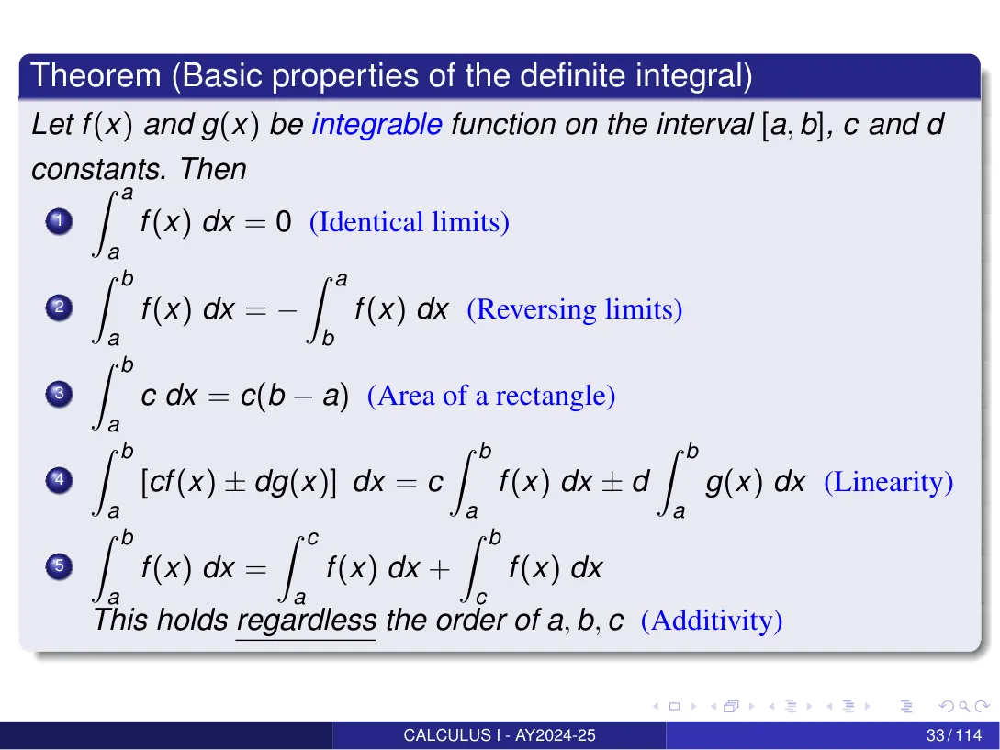
For integrable $f,g$ and constants $c,d$: $\int_a^af=0$; $\int_a^bf=-\int_b^af$; $\int_a^bc\,dx=c(b-a)$; linearity $\int(cf\pm dg)=c\int f\pm d\int g$; additivity $\int_a^bf=\int_a^cf+\int_c^bf$, valid for any order of $a,b,c$.
Với $f,g$ khả tích và hằng số $c,d$: $\int_a^af=0$; $\int_a^bf=-\int_b^af$; $\int_a^bc\,dx=c(b-a)$; tuyến tính $\int(cf\pm dg)=c\int f\pm d\int g$; cộng tính $\int_a^bf=\int_a^cf+\int_c^bf$, đúng với mọi thứ tự của $a,b,c$.
Given $\int_0^2f=3$ and $\int_2^5f=-1$, find $\int_0^5f$ and $\int_0^5(2f(x)+1)\,dx$.
Cho $\int_0^2f=3$ và $\int_2^5f=-1$, tìm $\int_0^5f$ và $\int_0^5(2f(x)+1)\,dx$.
Answer and solution · Đáp án và lời giải
Answer · Đáp án: $2$ and $9$
Additivity: $3+(-1)=2$. Linearity and the constant rule: $2\cdot2+1\cdot(5-0)=9$.
Cộng tính: $3+(-1)=2$. Tuyến tính và quy tắc hằng số: $2\cdot2+1\cdot(5-0)=9$.
Comparison properties · Các tính chất so sánh
★★★ Core · Cốt lõi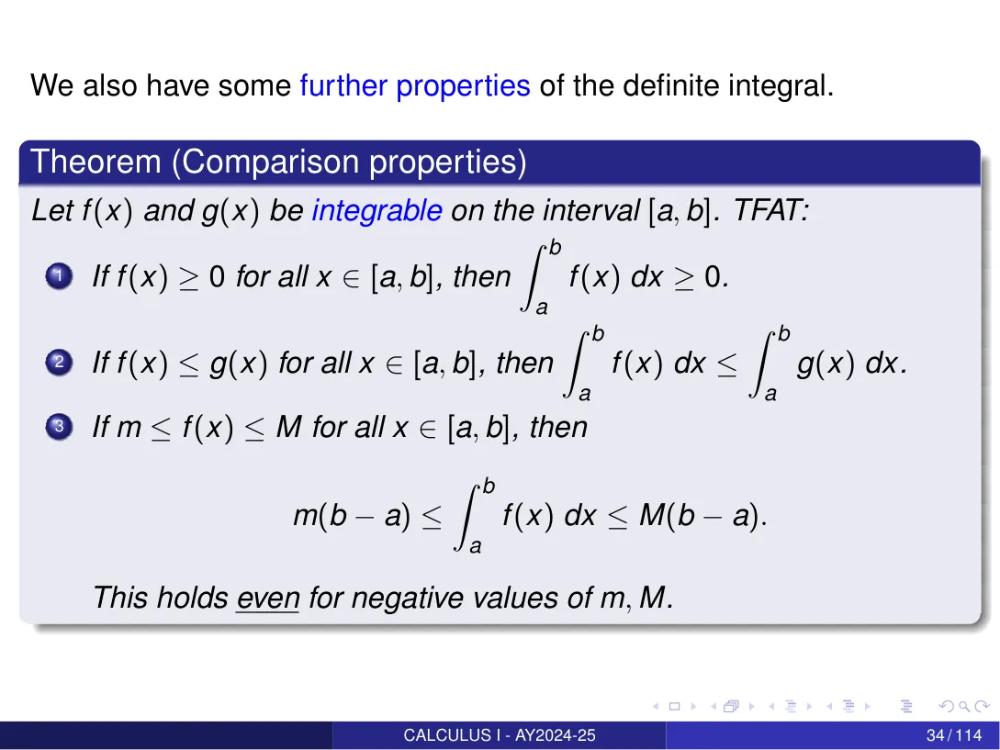
(1) $f\ge0\Rightarrow\int f\ge0$. (2) $f\le g\Rightarrow\int f\le\int g$. (3) If $m\le f\le M$ on $[a,b]$ then $m(b-a)\le\int_a^bf\le M(b-a)$ (also for negative $m,M$). Property (3) estimates an integral you cannot compute.
(1) $f\ge0\Rightarrow\int f\ge0$. (2) $f\le g\Rightarrow\int f\le\int g$. (3) Nếu $m\le f\le M$ trên $[a,b]$ thì $m(b-a)\le\int_a^bf\le M(b-a)$ (cũng với $m,M$ âm). Tính chất (3) dùng để ước lượng tích phân mà bạn không tính được.
Estimate $\int_0^1e^{x^2}\,dx$ from above and below.
Ước lượng $\int_0^1e^{x^2}\,dx$ từ trên và từ dưới.
Answer and solution · Đáp án và lời giải
Answer · Đáp án: $1\le\int_0^1e^{x^2}dx\le e$
On $[0,1]$: $x^2\in[0,1]$, so $1\le e^{x^2}\le e$. Multiply by the length $1$. (The true value is about $1.4627$.)
Trên $[0,1]$: $x^2\in[0,1]$ nên $1\le e^{x^2}\le e$. Nhân với độ dài $1$. (Giá trị thật xấp xỉ $1.4627$.)
Existence: continuous functions are integrable · Sự tồn tại: hàm liên tục thì khả tích
★★★ Core · Cốt lõi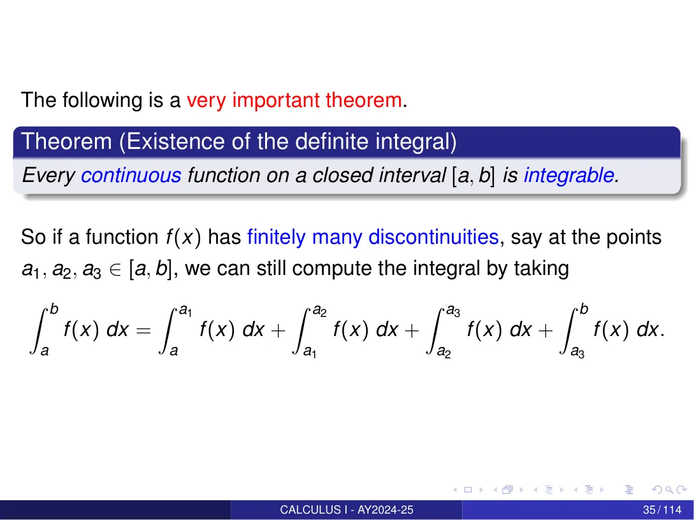
Every continuous function on a closed interval is integrable. If $f$ has finitely many discontinuities (jumps), split the integral at them and integrate piece by piece.
Mọi hàm liên tục trên đoạn đóng đều khả tích. Nếu $f$ có hữu hạn điểm gián đoạn (bước nhảy), tách tích phân tại các điểm đó và tính từng đoạn.
Compute $\int_0^3f(x)\,dx$ for $f(x)=2$ if $x<1$ and $f(x)=x$ if $x\ge1$.
Tính $\int_0^3f(x)\,dx$ với $f(x)=2$ nếu $x<1$ và $f(x)=x$ nếu $x\ge1$.
Answer and solution · Đáp án và lời giải
Answer · Đáp án: $6$
Split at the jump: $\int_0^12\,dx+\int_1^3x\,dx=2+\left(\frac92-\frac12\right)=2+4=6$.
Tách tại bước nhảy: $\int_0^12\,dx+\int_1^3x\,dx=2+\left(\frac92-\frac12\right)=2+4=6$.
The Mean Value Theorem for integrals · Định lý giá trị trung bình cho tích phân
★★★ Core · Cốt lõi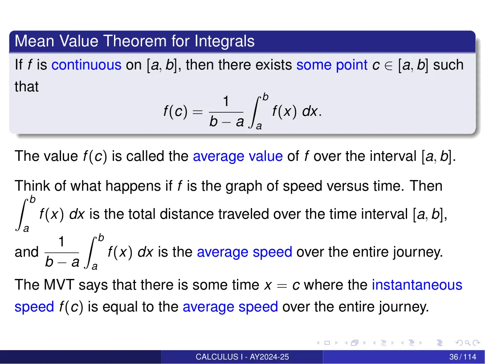
If $f$ is continuous on $[a,b]$ there is $c\in[a,b]$ with $f(c)=\frac1{b-a}\int_a^bf(x)\,dx$. This value is the average value of $f$. For a speed-versus-time graph: the integral is distance, the average is average speed, and at some time $c$ the instantaneous speed equals the average speed.
Nếu $f$ liên tục trên $[a,b]$ thì tồn tại $c\in[a,b]$ với $f(c)=\frac1{b-a}\int_a^bf(x)\,dx$. Giá trị này là giá trị trung bình của $f$. Với đồ thị tốc độ theo thời gian: tích phân là quãng đường, trung bình là tốc độ trung bình, và tại một thời điểm $c$ tốc độ tức thời bằng tốc độ trung bình.
Find the average value of $f(x)=x^2$ on $[0,3]$ and a point $c$ where it is attained.
Tìm giá trị trung bình của $f(x)=x^2$ trên $[0,3]$ và một điểm $c$ mà nó đạt được.
Answer and solution · Đáp án và lời giải
Answer · Đáp án: average $3$; $c=\sqrt3$
$\frac13\int_0^3x^2dx=\frac13\cdot9=3$. Solve $c^2=3$: $c=\sqrt3\in[0,3]$.
$\frac13\int_0^3x^2dx=\frac13\cdot9=3$. Giải $c^2=3$: $c=\sqrt3\in[0,3]$.
The average value as a rectangle of equal area · Giá trị trung bình như hình chữ nhật cùng diện tích
★★ Important · Quan trọng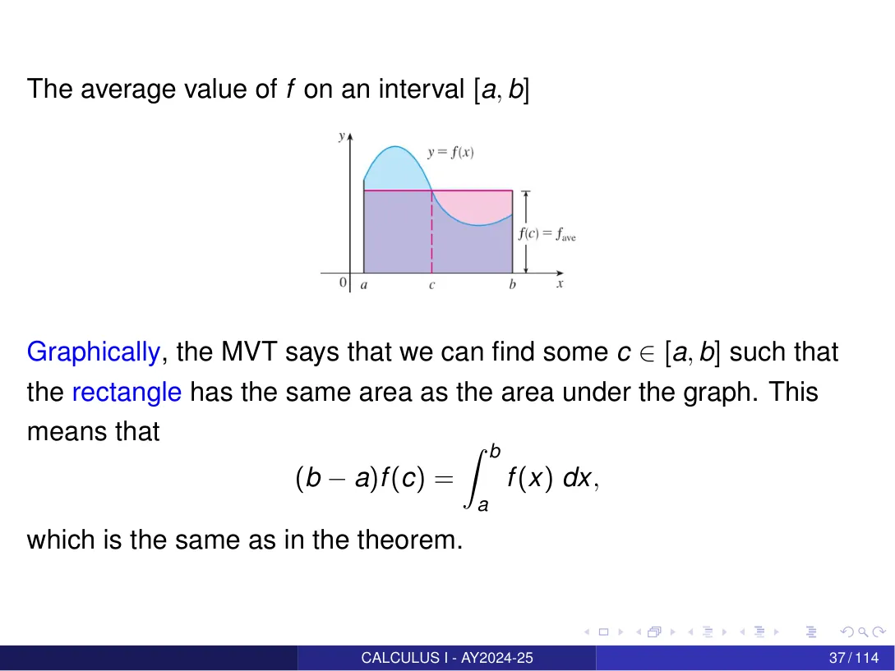
Geometrically, there is a $c$ for which the rectangle of width $b-a$ and height $f(c)$ has the same area as the region under the graph: $(b-a)f(c)=\int_a^bf$.
Về hình học, tồn tại $c$ sao cho hình chữ nhật rộng $b-a$ cao $f(c)$ có cùng diện tích với miền dưới đồ thị: $(b-a)f(c)=\int_a^bf$.
Example: $\cos c=\frac{\sin t}t$ · Ví dụ: $\cos c=\frac{\sin t}t$
★★★ Core · Cốt lõi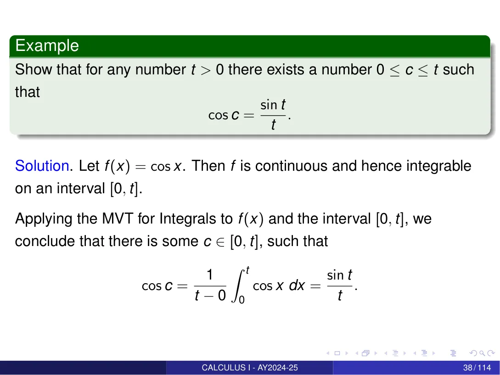
Show that for every $t>0$ there is $c\in[0,t]$ with $\cos c=\frac{\sin t}t$. Take $f=\cos$, continuous on $[0,t]$; the MVT for integrals gives $c$ with $\cos c=\frac1t\int_0^t\cos x\,dx=\frac{\sin t}t$.
Chứng minh với mọi $t>0$ tồn tại $c\in[0,t]$ sao cho $\cos c=\frac{\sin t}t$. Lấy $f=\cos$, liên tục trên $[0,t]$; MVT cho tích phân cho $c$ với $\cos c=\frac1t\int_0^t\cos x\,dx=\frac{\sin t}t$.
For $t=1$, find the number $c$ with $\cos c=\sin1$ and check that $c\in[0,1]$.
Với $t=1$, tìm số $c$ sao cho $\cos c=\sin1$ và kiểm tra $c\in[0,1]$.
Answer and solution · Đáp án và lời giải
Answer · Đáp án: $c=\arccos(\sin1)\approx0.5708$
$\sin1\approx0.8415$, so $c=\arccos0.8415\approx0.5708\in[0,1]$ (indeed $c=\frac\pi2-1$).
$\sin1\approx0.8415$ nên $c=\arccos0.8415\approx0.5708\in[0,1]$ (thật ra $c=\frac\pi2-1$).
Roadmap: the Fundamental Theorem of Calculus · Lộ trình: định lý cơ bản của giải tích
★ Context · Bổ trợ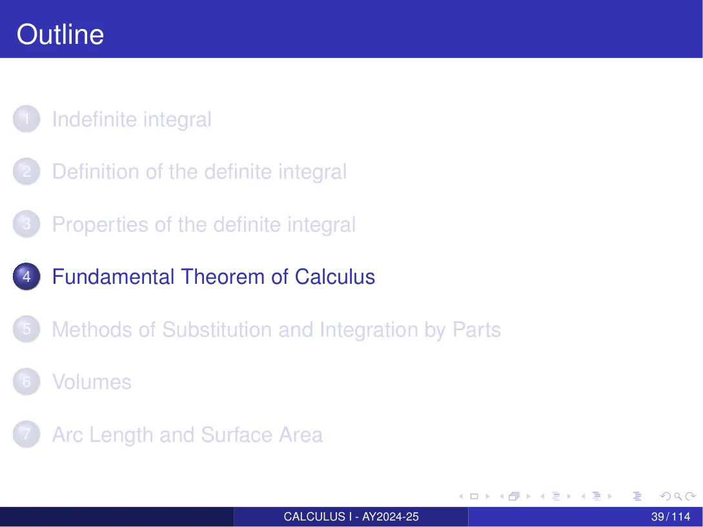
Outline, part 4: the Fundamental Theorem of Calculus. This is the bridge between the two meanings of the integral.
Lộ trình, phần 4: định lý cơ bản của giải tích. Đây là cây cầu nối hai ý nghĩa của tích phân.
FTC part 1: the integral function is an antiderivative · FTC phần 1: hàm tích phân là một nguyên hàm
★★★ Core · Cốt lõi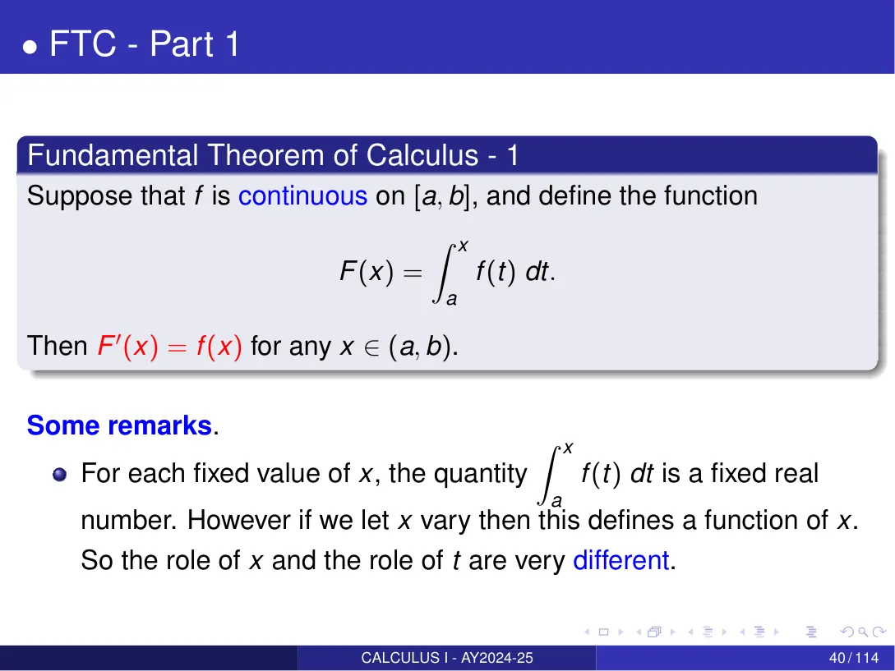
If $f$ is continuous on $[a,b]$ and $F(x)=\int_a^xf(t)\,dt$, then $F'(x)=f(x)$. For each fixed $x$ the integral is a number, but as $x$ varies it is a function of $x$; the roles of $x$ (the limit) and $t$ (the dummy variable) are different.
Nếu $f$ liên tục trên $[a,b]$ và $F(x)=\int_a^xf(t)\,dt$ thì $F'(x)=f(x)$. Với mỗi $x$ cố định tích phân là một số, nhưng khi $x$ thay đổi nó là hàm của $x$; vai trò của $x$ (cận) và $t$ (biến câm) khác nhau.
FTC-1 says that integration and differentiation undo each other; it guarantees every continuous function has an antiderivative, and is used to differentiate integrals with variable limits.
FTC-1 nói tích phân và đạo hàm là hai phép toán ngược nhau; nó đảm bảo mọi hàm liên tục đều có nguyên hàm, và dùng để đạo hàm các tích phân có cận biến thiên.
Compute $\dfrac d{dx}\displaystyle\int_0^x\sqrt{1+t^2}\,dt$.
Tính $\dfrac d{dx}\displaystyle\int_0^x\sqrt{1+t^2}\,dt$.
Answer and solution · Đáp án và lời giải
Answer · Đáp án: $\sqrt{1+x^2}$
FTC-1: replace $t$ by $x$ in the integrand. No integration needed.
FTC-1: thay $t$ bằng $x$ trong hàm dưới dấu tích phân. Không cần tính tích phân.
FTC-1 written as a derivative; the lower limit is irrelevant · FTC-1 viết dạng đạo hàm; cận dưới không quan trọng
★★★ Core · Cốt lõi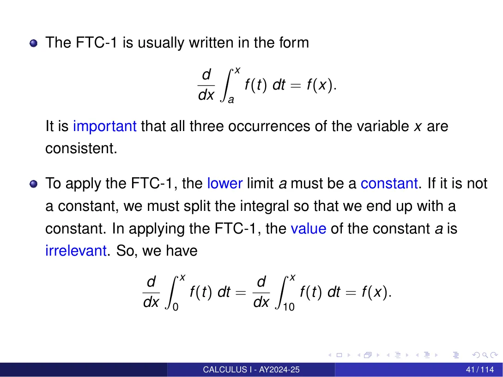
$\frac d{dx}\int_a^xf(t)\,dt=f(x)$. The lower limit must be a constant (if not, split the integral to get a constant), and its value is irrelevant: $\frac d{dx}\int_0^x=\frac d{dx}\int_{10}^x=f(x)$, since they differ by a constant.
$\frac d{dx}\int_a^xf(t)\,dt=f(x)$. Cận dưới phải là hằng số (nếu không, tách tích phân để có hằng số), và giá trị của nó không quan trọng: $\frac d{dx}\int_0^x=\frac d{dx}\int_{10}^x=f(x)$, vì chúng khác nhau một hằng số.
Compute $\dfrac d{dx}\displaystyle\int_x^5t^2\,dt$.
Tính $\dfrac d{dx}\displaystyle\int_x^5t^2\,dt$.
Answer and solution · Đáp án và lời giải
Answer · Đáp án: $-x^2$
The variable is in the lower limit: $\int_x^5=-\int_5^x$, so the derivative is $-x^2$.
Biến nằm ở cận dưới: $\int_x^5=-\int_5^x$ nên đạo hàm là $-x^2$.
Example: variable upper limits and the chain rule · Ví dụ: cận trên biến thiên và quy tắc hàm hợp
★★★ Core · Cốt lõi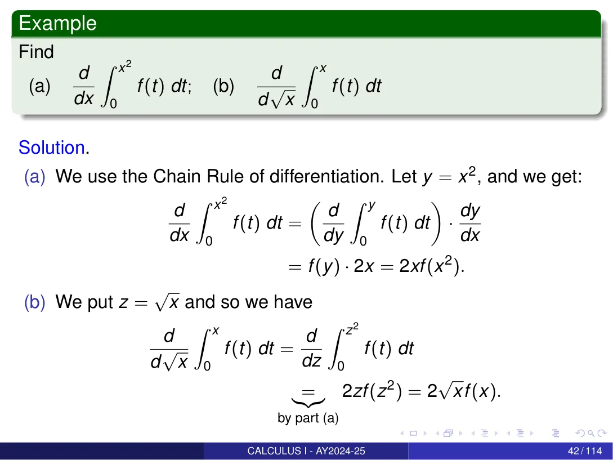
(a) $\frac d{dx}\int_0^{x^2}f(t)\,dt$: put $y=x^2$ and use the chain rule: $\frac d{dy}\int_0^yf\cdot\frac{dy}{dx}=f(y)\cdot2x=2xf(x^2)$. (b) The slide differentiates $\int_0^xf(t)\,dt$ with respect to $\sqrt x$ (not $x$!): put $z=\sqrt x$, so the integral is $\int_0^{z^2}f$ and by part (a) $\frac d{dz}=2zf(z^2)=2\sqrt x\,f(x)$. The pattern is always the integrand at the upper limit times the derivative of the upper limit.
(a) $\frac d{dx}\int_0^{x^2}f(t)\,dt$: đặt $y=x^2$ và dùng quy tắc hàm hợp: $\frac d{dy}\int_0^yf\cdot\frac{dy}{dx}=f(y)\cdot2x=2xf(x^2)$. (b) Slide lấy đạo hàm của $\int_0^xf(t)\,dt$ theo $\sqrt x$ (không phải theo $x$!): đặt $z=\sqrt x$, khi đó tích phân là $\int_0^{z^2}f$ và theo câu (a) $\frac d{dz}=2zf(z^2)=2\sqrt x\,f(x)$. Mẫu luôn là: hàm dưới dấu tích phân tại cận trên nhân với đạo hàm của cận trên.
Compute $\dfrac d{dx}\displaystyle\int_1^{x^3}\sin t\,dt$.
Tính $\dfrac d{dx}\displaystyle\int_1^{x^3}\sin t\,dt$.
Answer and solution · Đáp án và lời giải
Answer · Đáp án: $3x^2\sin(x^3)$
Integrand at the upper limit, $\sin(x^3)$, times the derivative of the upper limit, $3x^2$.
Hàm dưới dấu tích phân tại cận trên, $\sin(x^3)$, nhân đạo hàm của cận trên, $3x^2$.
Integrate then differentiate, or the other way round · Tích phân rồi đạo hàm, hay ngược lại
★★★ Core · Cốt lõi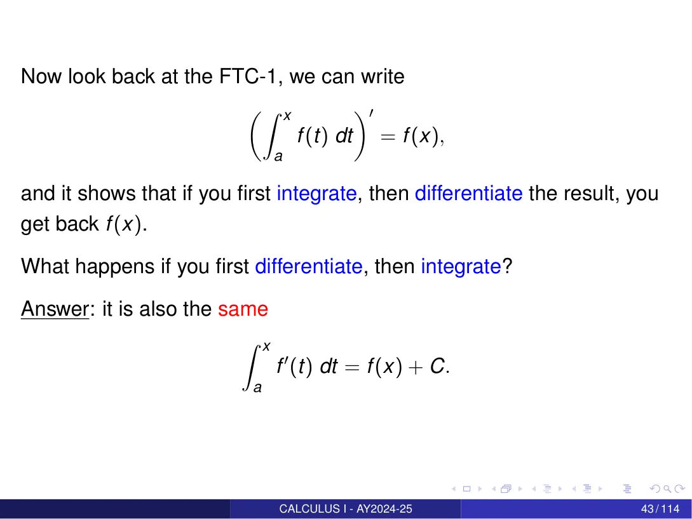
First integrate then differentiate gives back $f(x)$. First differentiate then integrate gives $\int_a^xf'(t)\,dt=f(x)-f(a)$, i.e. $f(x)+C$: the two operations cancel up to a constant.
Tích phân trước rồi đạo hàm cho lại $f(x)$. Đạo hàm trước rồi tích phân cho $\int_a^xf'(t)\,dt=f(x)-f(a)$, tức $f(x)+C$: hai phép toán triệt tiêu nhau sai khác một hằng số.
Compute $\displaystyle\int_1^x2t\,dt$ and differentiate the result.
Tính $\displaystyle\int_1^x2t\,dt$ rồi đạo hàm kết quả.
Answer and solution · Đáp án và lời giải
Answer · Đáp án: $x^2-1$, derivative $2x$
$[t^2]_1^x=x^2-1$ and its derivative is $2x$, the original integrand.
$[t^2]_1^x=x^2-1$ và đạo hàm của nó là $2x$, đúng hàm ban đầu.
FTC part 2: evaluate with an antiderivative · FTC phần 2: tính bằng nguyên hàm
★★★ Core · Cốt lõi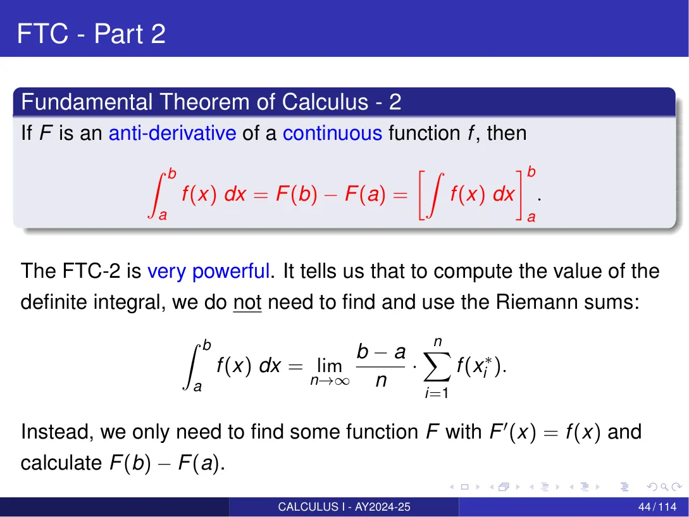
If $F'=f$ with $f$ continuous, then $\int_a^bf(x)\,dx=F(b)-F(a)$, often written $[F(x)]_a^b$. No Riemann sums needed: find any antiderivative and subtract the values at the ends.
Nếu $F'=f$ với $f$ liên tục thì $\int_a^bf(x)\,dx=F(b)-F(a)$, thường viết $[F(x)]_a^b$. Không cần tổng Riemann: tìm một nguyên hàm bất kỳ rồi lấy hiệu giá trị ở hai đầu.
FTC-2 is the computational workhorse of integral calculus; every definite integral in the exam is evaluated this way.
FTC-2 là công cụ tính toán chính của giải tích tích phân; mọi tích phân xác định trong đề thi đều được tính bằng cách này.
Compute $\displaystyle\int_1^4\sqrt x\,dx$ and $\displaystyle\int_0^\pi\sin x\,dx$.
Tính $\displaystyle\int_1^4\sqrt x\,dx$ và $\displaystyle\int_0^\pi\sin x\,dx$.
Answer and solution · Đáp án và lời giải
Answer · Đáp án: $\frac{14}3$ and $2$
$\left[\frac23x^{3/2}\right]_1^4=\frac23(8-1)=\frac{14}3$. $[-\cos x]_0^\pi=1-(-1)=2$.
$\left[\frac23x^{3/2}\right]_1^4=\frac23(8-1)=\frac{14}3$. $[-\cos x]_0^\pi=1-(-1)=2$.
Example: the area under $(x-2)^2(x+2)^2$ · Ví dụ: diện tích dưới $(x-2)^2(x+2)^2$
★★★ Core · Cốt lõi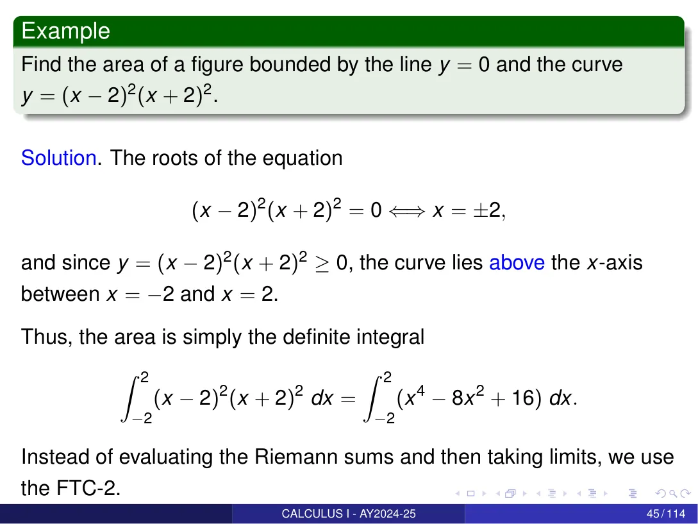
Find the area bounded by $y=0$ and $y=(x-2)^2(x+2)^2$. Roots $x=\pm2$ and the curve is $\ge0$ between them, so the area is the plain integral $\int_{-2}^2(x^2-4)^2dx=\int_{-2}^2(x^4-8x^2+16)\,dx$. Use the FTC-2 instead of Riemann sums.
Tìm diện tích giới hạn bởi $y=0$ và $y=(x-2)^2(x+2)^2$. Nghiệm $x=\pm2$ và đường cong $\ge0$ giữa hai nghiệm nên diện tích là tích phân thường $\int_{-2}^2(x^2-4)^2dx=\int_{-2}^2(x^4-8x^2+16)\,dx$. Dùng FTC-2 thay vì tổng Riemann.
Example: the antiderivative and the symmetry shortcut · Ví dụ: nguyên hàm và lối tắt nhờ đối xứng
★★★ Core · Cốt lõi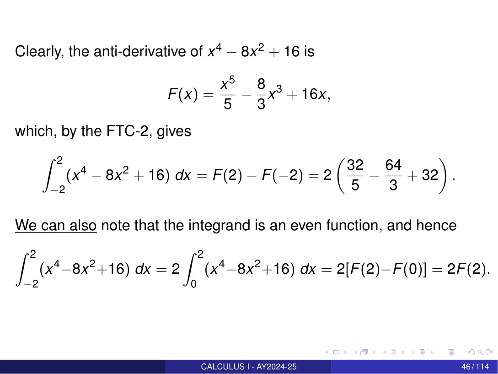
$F(x)=\frac{x^5}5-\frac83x^3+16x$, so the area is $F(2)-F(-2)=2\left(\frac{32}5-\frac{64}3+32\right)=\frac{512}{15}$. Shortcut: the integrand is even, so $\int_{-2}^2=2\int_0^2=2[F(2)-F(0)]=2F(2)$.
$F(x)=\frac{x^5}5-\frac83x^3+16x$, nên diện tích là $F(2)-F(-2)=2\left(\frac{32}5-\frac{64}3+32\right)=\frac{512}{15}$. Lối tắt: hàm dưới dấu tích phân là hàm chẵn nên $\int_{-2}^2=2\int_0^2=2[F(2)-F(0)]=2F(2)$.
Finish the slide: compute $\int_{-2}^2(x-2)^2(x+2)^2\,dx$ exactly.
Hoàn thành slide: tính chính xác $\int_{-2}^2(x-2)^2(x+2)^2\,dx$.
Answer and solution · Đáp án và lời giải
Answer · Đáp án: $\dfrac{512}{15}\approx34.13$
$F(2)=\frac{32}5-\frac{64}3+32=\frac{96-320+480}{15}=\frac{256}{15}$, and the area is $2F(2)=\frac{512}{15}$.
$F(2)=\frac{32}5-\frac{64}3+32=\frac{96-320+480}{15}=\frac{256}{15}$, và diện tích là $2F(2)=\frac{512}{15}$.